Strona główna ma zbudować zaufanie i pokazać koszt po dotacji z montażem, zanim kupujący odejdzie. Zmieniamy tylko to, co wynika z analizy; reszta zostaje 1:1.
Cena, montaż i dotacja w projektach to liczby przykładowe sklepu testowego; złote pola [X] czekają na dane i decyzje. Sekcje bez zmian zostają 1:1 — sekcje nie są usuwane. Opinii klientów i rankingów sprzedaży nie ma: projekt pokazuje miejsce i mechanizm, nie wymyślone liczby. Liczby „n z 8” to rynek PL (8 sklepów), „n z 11” to PL i UE razem (Quatt, Flairmax, Hello Watt).
14elementów w projekcie
7ulepszamy (istniejące)
7nowe
1opcjonalne (słaby dowód)
4czekają na dane (dostawca, firma, opinie)
Klucz zmian＋ Noweelement lub funkcja, których dziś nie ma✎ Zmianaistniejący element zmienia wygląd, układ lub działanieAa Tekstzmienia się tylko napis lub treść⇄ Przeniesienieelement trafia w inne miejsce− Usunięcieelement znika ze strony[X]złote pole — dane lub decyzja do uzupełnienia
Numer w kółku na projekcie ma kolor kodu i odpowiada pozycji na liście „Znaczniki na projekcie”.
Logo dostaje znak graficzny (prośba Tomka o „ładne logo”), napis „Menu” zamienia się w ikonę, a nagłówek dostaje ikonę telefonu do doradcy i licznik na koszyku. Koszyk jest już ikoną, więc ta część nagłówka się nie zmienia. Pole wyszukiwania i układ zostają 1:1.
Najlepsze na rynku
Quatt: logo i obok pomarańczowy przycisk „Plan advies” — doradca w nagłówku na każdej podstronie.
Hello Watt: ikona żarówki przy napisie, jeden znak graficzny.
Flairmax: znak Trusted Shops z gwiazdkami stoi w nagłówku obok logo.
Flairmax: ikony zamiast słów w pasku narzędzi (menu, lupa, ulubione, konto, koszyk).
Quatt (NL)Logo Quatt z pomarańczowym przyciskiem „Plan advies” i ikoną menu w jednym wierszu.
Hello Watt (FR)Logo „hello watt” z ikoną żarówki w lewym rogu paska.
Flairmax (DE)Logo Flairmax z podpisem i znakiem Trusted Shops z pięcioma gwiazdkami po prawej.
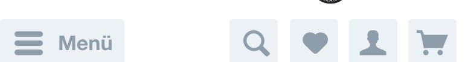
Flairmax (DE)Pasek ikon: menu, lupa, ulubione, konto i koszyk — same ikony.
Dziś
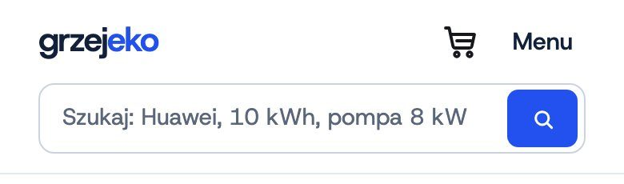
Dziś: logo tekstem, ikona koszyka bez licznika, słowo „Menu”, pole wyszukiwania w drugim wierszu.
✎ ZmianaLogo: znak graficzny przy napisie „grzejeko” (kierunek znaku do zatwierdzenia).
＋ NoweIkona telefonu: wejście do doradcy z każdego miejsca strony.
＋ NoweLicznik pozycji na ikonie koszyka (od 1 pozycji w górę; przy pustym koszyku bez liczby).
✎ Zmiana„Menu” jako ikona trzech kresek zamiast słowa.
Znaczniki na projekcie
1HP-01.1✎ ZmianaZnak graficzny w logo
2HP-01.2＋ NoweTelefon do doradcy
3HP-01.3＋ NoweLicznik w koszyku
4HP-01.4✎ ZmianaIkona menu
DlaczegoZnak graficzny, ikona telefonu i licznik koszyka w tych samych dwóch wierszach nagłówka; koszyk już jest ikoną.kliknij, aby rozwinąć
KupującyKupujący bank i pompę wydaje 25–70 tys.Czytaj więcejzł i szuka sygnału, że za sklepem stoi firma; do rozmowy z człowiekiem ma dojść bez szukania numeru. Ikona telefonu skraca drogę do doradcy do jednego dotyku, a licznik koszyka potwierdza, że paragon z montażem został dodany.
RynekLogo mają wszystkie sklepy (8 z 8 w PL, 11 z 11 razem), więc element jest obowiązkowy.Czytaj więcejQuatt trzyma w nagłówku przycisk doradztwa „Plan advies”, Flairmax znak Trusted Shops obok logo, Hello Watt ikonę żarówki przy napisie. Ikona konta jest w 3 z 8 sklepów PL; nie bierzemy jej przed startem konta klienta.
UXDziś nagłówek ma 109 px i dwa wiersze; słowo „Menu” zajmuje miejsce jednej ikony, a koszyk nie pokazuje liczby, więc po dodaniu paragonu kupujący nie ma potwierdzenia.Czytaj więcejZmiana mieści się w tych samych dwóch wierszach. Z projektu F2 bierzemy znak i ikony, bo uzasadnia je prośba Tomka o logo i wniosek z analizy o doradcy.
Testy A/B — 5 propozycji · 1 z grafiką kliknij, aby rozwinąćTest 1 · A/BWyszukiwarka jako ikona zamiast polaz grafiką
Hipoteza: Jeśli pole wyszukiwania zamienimy na ikonę lupy, to więcej osób zobaczy treść na pierwszym ekranie, bo nagłówek z 109 px zmieni się w jeden wiersz.
Wariant ADwa wiersze: logo i ikony, pod nimi pole „Szukaj: Huawei, 10 kWh, pompa 8 kW”.
Test 2 · A/BZnak graficzny w logo kontra sam napis
Hipoteza: Jeśli logo dostanie znak graficzny, to więcej osób rozpozna sklep przy powrocie, bo znak odróżnia nowy sklep od sklepów bez marki.
Wariant ALogo tekstem „grzejeko”.
Wariant BLogo ze znakiem (dom, płomień, błyskawica) przy napisie.
Dowód: Hello Watt i Quatt mają wyróżniony znak lub napis przy logo.
Metryka główna: Powroty bezpośrednie w ciągu 14 dni
Pomocnicze:
Czas do pierwszego kliknięcia
Warunek: Po starcie sprzedaży, min. 200 sesji na wariant; do tego czasu przegląd nagrań sesji (Clarity) i porównanie przed/po.
Próba: min. 200 sesji na wariant
Zastępczo: przed/po 14 dni + 20 nagrań sesji z elementem w widoku
Odwracalny
Test 3 · A/BIkona telefonu w kolorze akcentu
Hipoteza: Jeśli ikona telefonu będzie w kolorze akcentu linii, to więcej osób w nią kliknie, bo wyróżni się wśród czarnych ikon.
Wariant AIkony czarne.
Wariant BTelefon w kolorze akcentu wybranej linii.
Metryka główna: Klik w telefon
Warunek: Po starcie sprzedaży, min. 200 sesji na wariant; do tego czasu przegląd nagrań sesji (Clarity) i porównanie przed/po.
Próba: min. 200 sesji na wariant
Zastępczo: przed/po 14 dni + 20 nagrań sesji z elementem w widoku
Odwracalny
Test 4 · A/BLicznik koszyka: liczba kontra kropka
Hipoteza: Jeśli licznik będzie kropką bez liczby, to nagłówek będzie spokojniejszy, a potwierdzenie dodania zostanie.
Wariant ALiczba pozycji w kółku.
Wariant BKropka bez liczby.
Metryka główna: Przejście do koszyka po dodaniu
Warunek: Po starcie sprzedaży, min. 200 sesji na wariant; do tego czasu przegląd nagrań sesji (Clarity) i porównanie przed/po.
Próba: min. 200 sesji na wariant
Zastępczo: przed/po 14 dni + 20 nagrań sesji z elementem w widoku
Odwracalny
Test 5 · A/BMenu: ikona kontra ikona z podpisem
Hipoteza: Jeśli ikona menu dostanie podpis „Menu”, to więcej osób je otworzy, bo część kupujących nie rozpoznaje trzech kresek.
Wariant ASama ikona.
Wariant BIkona i podpis „Menu”.
Metryka główna: Otwarcia menu
Warunek: Po starcie sprzedaży, min. 200 sesji na wariant; do tego czasu przegląd nagrań sesji (Clarity) i porównanie przed/po.
Próba: min. 200 sesji na wariant
Zastępczo: przed/po 14 dni + 20 nagrań sesji z elementem w widoku
Odwracalny
Decyzja Kształt znaku graficznego (propozycja: dom, płomień i błyskawica) zatwierdza Tomek; do czasu zatwierdzenia logo zostaje tekstem.
HP-02
Przełącznik linii: pompy ciepła i banki energii
DODAJEMY
Dwie kategorie, które rządzą się innymi pytaniami (bank: dobór do falownika, pompa: dobór mocy do domu), dostają trzy fronty w jednym sklepie: Dom bez rachunków (pompa + bank), Banki energii, Pompy ciepła. Koszyk, wyszukiwarka, doradca i stopka są wspólne; zmienia się akcent koloru i dane na stronie. Dwa osobne sklepy zostają jako test A/B po starcie.
Najlepsze na rynku
Quatt: cztery linie (Hybrid, All-Electric, Chill, HomeBattery) jako karty w jednym sklepie, z wspólnymi usługami (aplikacja, serwis).
Flairmax: cztery kafle „Unsere Klimaanlagen für” (1 pokój, 2, 3, Klimaplaner) i kafle marek: dwa sposoby wejścia na jednej stronie.
Columbus: panel „Otrzymaj ofertę skrojoną pod siebie!” — wybór sytuacji (mam dom, buduję dom, mam biznes, rolnik, instytucja).
GeoPower: dwa kafle wejścia — klient indywidualny i strefa instalatora.
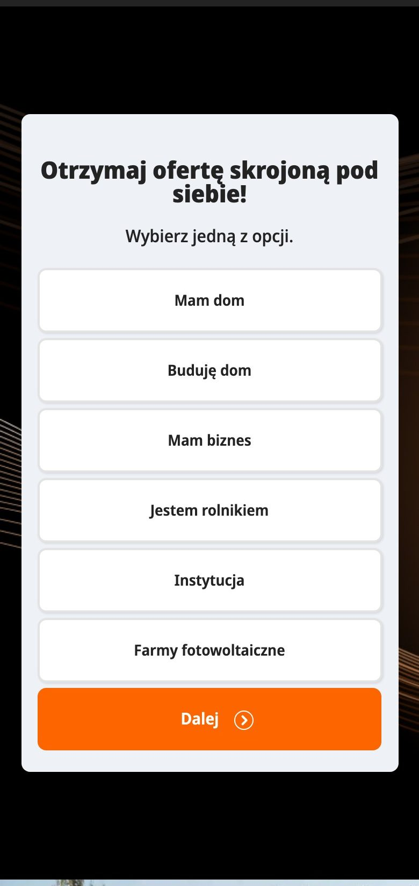
Columbus EnergyPanel wyboru sytuacji: Mam dom, Buduję dom, Mam biznes, Jestem rolnikiem, Instytucja, Farmy fotowoltaiczne, przycisk „Dalej”.
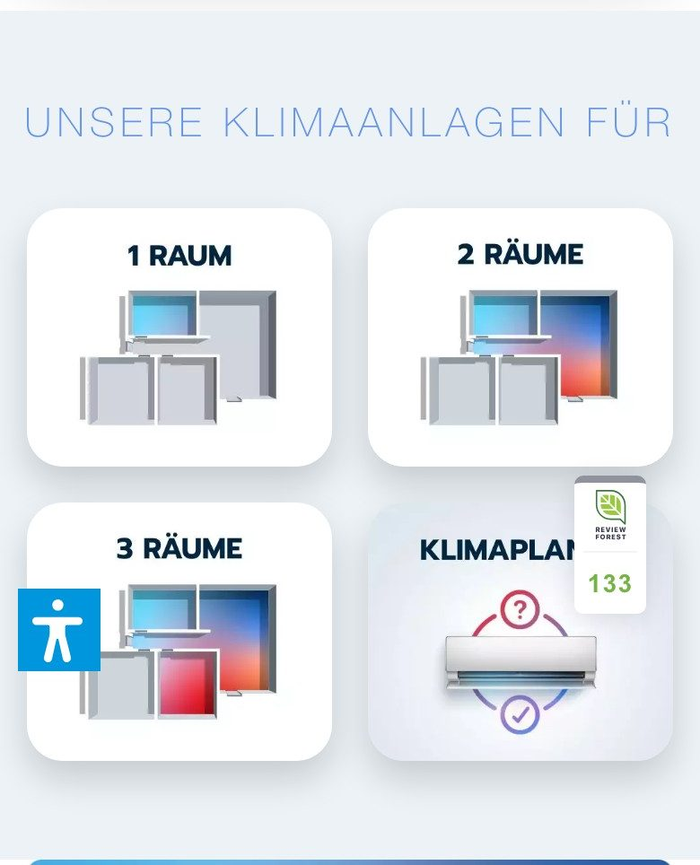
Flairmax (DE)Cztery kafle w siatce 2×2: 1 pomieszczenie, 2, 3 i „Klimaplaner”.
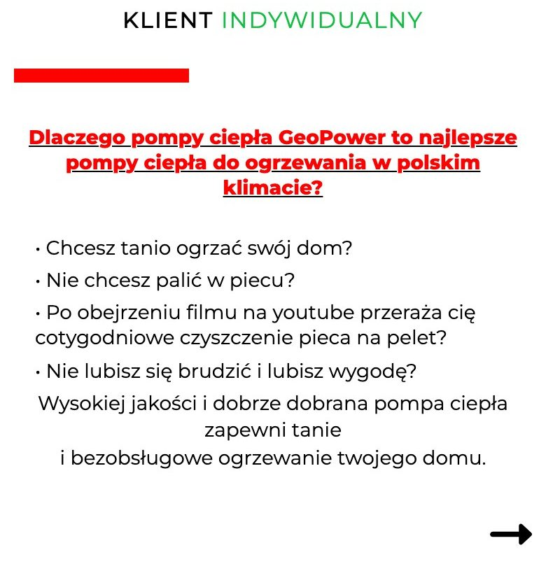
GeoPowerKafel wejścia „Klient indywidualny” z listą powodów i strzałką; obok kafel „Strefa instalatora”.
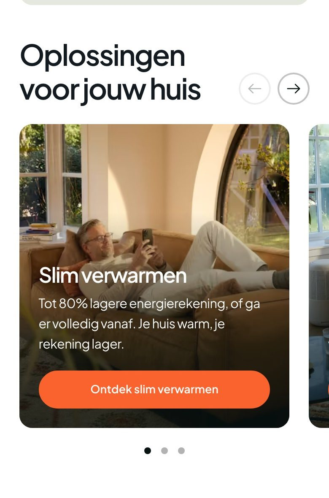
Quatt (NL)Karuzela rozwiązań: karta „Slim verwarmen” ze zdjęciem, opisem i przyciskiem; strzałki i trzy kropki.
DlaczegoPrzełącznik trzech linii pod wyszukiwarką; koszyk, wyszukiwarka, doradca i stopka są wspólne. Decyzja: hybryda w jednym sklepie; dwa osobne sklepy do testu A/B po starcie.kliknij, aby rozwinąć
KupującyW kategorii banków pompa ciepła figuruje jako kategoria powiązana: kupujący z fotowoltaiką pyta „czym ogrzać dom”, a kupujący pompę często ma już PV.Czytaj więcejJednocześnie obie kategorie mają inne punkty wejścia (bank: dotacja i dobór do falownika; pompa: wymiana kotła, dobór mocy, instalator), więc jedna strona główna musi się różnić zależnie od sytuacji.
RynekPodział po stronie wejścia robi większość rynku: kafle kategorii ma 7 z 8 sklepów PL i 10 z 11 razem.Czytaj więcejColumbus pyta „mam dom / buduję dom / mam biznes” (1 z 8 PL), GeoPower dzieli wejście na klienta indywidualnego i instalatora, Flairmax na liczbę pomieszczeń i markę, Quatt trzyma cztery linie w jednym sklepie z jednym zapleczem usług. W mapie elementów 8 sklepów PL nie ma takiego elementu jak przełącznik linii produktów.
UXHybryda wygrywa z dwoma sklepami przy jednym koszyku i jednym doradcy: montaż, dotacja i poradniki są wspólnym zapleczem.Czytaj więcejDwa sklepy dałyby czystszą wyszukiwalność fraz („pompa ciepła” 60 tys. wyszukań miesięcznie osobno od „magazyn energii”), ale dublowałyby koszyk i doradcę; wybór rozstrzyga test po starcie. Z projektu F2 bierzemy przełącznik, bo analiza uzasadnia podział (nie jako ozdobę).
Testy A/B — 5 propozycji · 1 z grafiką kliknij, aby rozwinąćTest 1 · A/BHybryda kontra dwa osobne sklepyz grafiką
Hipoteza: Jeśli pompy i banki zostaną w jednym sklepie z przełącznikiem, to więcej osób złoży zamówienie na oba produkty, bo mają jeden koszyk i jednego doradcę.
Wariant AJeden sklep, trzy linie, wspólny koszyk.
Wariant BDwa sklepy (osobne adresy), każdy z własną kategorią i własnym koszykiem; odsyłacz „Zobacz drugi sklep”.
Dowód: Powiązanie kategorii w opracowaniu kategorii banku (pompa ciepła); Quatt trzyma linie w jednym sklepie.
Metryka główna: Zamówienie z dwoma produktami (pompa + bank) na 100 zamówień
Pomocnicze:
Przychód na sesję
Wejścia z wyszukiwarki na frazy kategorii
Warunek: Po starcie sprzedaży i zebraniu min. 2 miesięcy danych; wymaga dwóch adresów; test na poziomie sklepu, nie na stronie.
Próba: min. 100 zamówień na wariant
Zastępczo: przed/po 14 dni + 20 nagrań sesji z elementem w widoku
Hipoteza: Jeśli zostaną tylko dwie zakładki (Banki, Pompy), a „Dom bez rachunków” przejdzie do banera, to mniej osób pomyli się przy wyborze, bo nazwy będą odpowiadać produktom.
Wariant ATrzy zakładki.
Wariant BDwie zakładki i baner „Dom bez rachunków” pod nagłówkiem.
Dowód: Columbus i GeoPower używają dwóch lub czterech wejść, nigdy nazwy „dom bez rachunków”.
Metryka główna: Wybór linii w pierwszych 10 sekundach
Pomocnicze:
Wejścia w baner
Odbicia ze strony głównej
Warunek: Po starcie sprzedaży, min. 200 sesji na wariant; do tego czasu przegląd nagrań sesji (Clarity) i porównanie przed/po.
Próba: min. 200 sesji na wariant
Zastępczo: przed/po 14 dni + 20 nagrań sesji z elementem w widoku
Odwracalny
Test 3 · A/BKolor akcentu linii kontra jeden kolor
Hipoteza: Jeśli akcent koloru będzie jeden, to strona będzie spokojniejsza i stały kolor kliknięcia zostanie, bo trzy kolory mogą osłabić jednolitość.
Wariant ATrzy kolory linii.
Wariant BJeden kolor akcentu (kobalt).
Metryka główna: Przejście na listę produktów
Warunek: Po starcie sprzedaży, min. 200 sesji na wariant; do tego czasu przegląd nagrań sesji (Clarity) i porównanie przed/po.
Próba: min. 200 sesji na wariant
Zastępczo: przed/po 14 dni + 20 nagrań sesji z elementem w widoku
Odwracalny
Test 4 · A/BPrzełącznik w nagłówku kontra pod hero
Hipoteza: Jeśli przełącznik wejdzie pod hero zamiast do nagłówka, to więcej osób zobaczy najpierw obietnicę sklepu, a potem wybierze linię.
Wariant APod wyszukiwarką w nagłówku.
Wariant BPod hero, nad kaflami.
Metryka główna: Wybór linii
Warunek: Po starcie sprzedaży, min. 200 sesji na wariant; do tego czasu przegląd nagrań sesji (Clarity) i porównanie przed/po.
Próba: min. 200 sesji na wariant
Zastępczo: przed/po 14 dni + 20 nagrań sesji z elementem w widoku
Odwracalny
Test 5 · A/BDomyślna linia: dom bez rachunków kontra banki
Hipoteza: Jeśli wejściem będzie linia banków (większy popyt: 9 320 fraz o dotacji), to więcej osób wejdzie w narzędzie doboru, bo dotyczy większej grupy.
Wariant AWejście: dom bez rachunków.
Wariant BWejście: banki energii.
Metryka główna: Rozpoczęcie narzędzia doboru
Warunek: Po starcie sprzedaży, min. 200 sesji na wariant; do tego czasu przegląd nagrań sesji (Clarity) i porównanie przed/po.
Próba: min. 200 sesji na wariant
Zastępczo: przed/po 14 dni + 20 nagrań sesji z elementem w widoku
Odwracalny
Decyzja Hybryda czy dwa osobne sklepy: decyzja Tomka; domyślnie hybryda, drugi wariant do testu po starcie.
HP-03
Hero: cena po dotacji i trzy wejścia
UZUPEŁNIENIE FUNKCJI
Nagłówek, akapit i zdjęcie zostają. Dochodzi jedna linia ceny „od … po dotacji, z montażem” i trzy wejścia pod głównym przyciskiem: policz dotację, zobacz cenę montażu, dobierz moc pompy. Dwa linki „Banki energii | Pompy ciepła” przejmuje przełącznik linii.
Najlepsze na rynku
KupPanPompe: trzy zielone pasy pod hero — „Dofinansowania programy dotacyjne”, „Kalkulator doboru pomp ciepła”, „Montaż pompy 8% VAT”.
GeoPower: pojedynczy przycisk „Dobierz pompę ciepła” prowadzący do programu doboru (8 pytań).
Boxt: karta „Heat pumps · Installed from £4,799” z przyciskiem „Get a fixed price heat pump quote”.
Quatt: ocena 4,3/5 i 4 208 opinii nad hasłem hero, dwa przyciski pod hasłem.
KupPanPompeZielony pas z przyciskiem „Dofinansowania — programy dotacyjne”.
KupPanPompeZielony pas z przyciskiem „Kalkulator doboru pomp ciepła”.
KupPanPompeZielony pas z przyciskiem „Montaż pompy 8% VAT”.
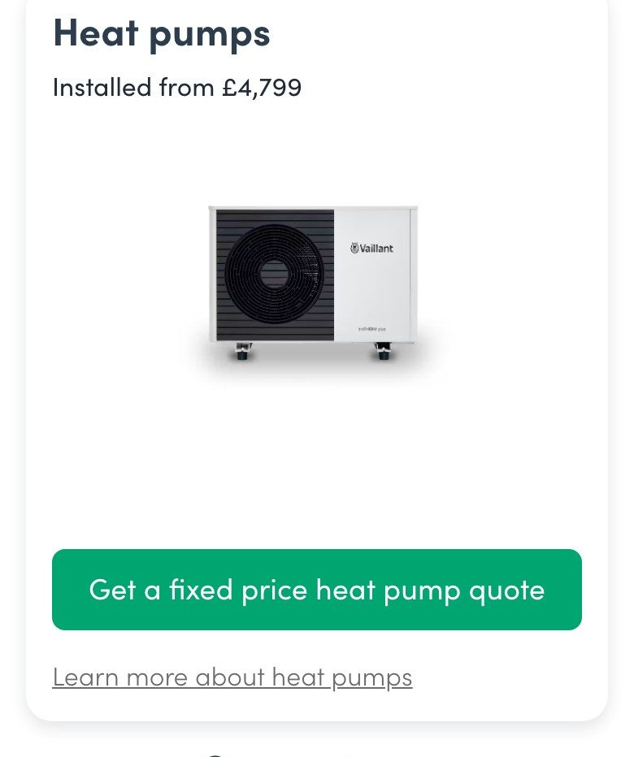
Boxt (UK)Karta „Heat pumps — Installed from £4,799” ze zdjęciem jednostki i przyciskiem „Get a fixed price heat pump quote”.
GeoPowerCzarny przycisk „Dobierz pompę ciepła” prowadzący do programu doboru.
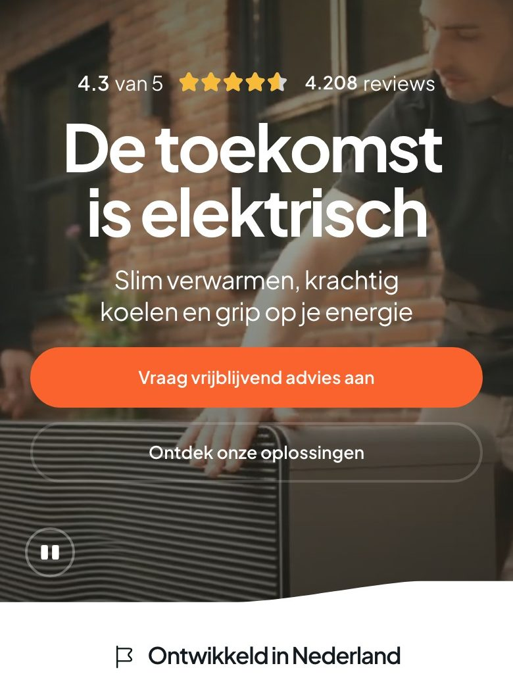
Quatt (NL)Ocena 4,3 z 5, pięć gwiazdek i „4.208 reviews” nad hasłem; pod hasłem dwa przyciski.
Dziś
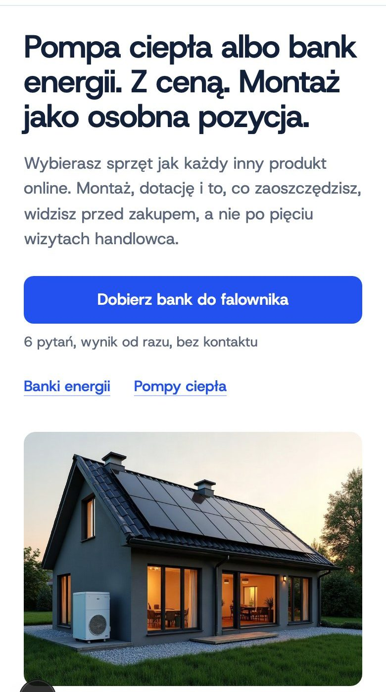
Dziś: nagłówek, akapit, przycisk „Dobierz bank do falownika”, dwa linki i zdjęcie domu; ceny w hero nie ma.
Projekt
Pompa ciepła albo bank energii. Z ceną. Montaż jako osobna pozycja.
Wybierasz sprzęt jak każdy inny produkt online. Montaż, dotację i to, co zaoszczędzisz, widzisz przed zakupem, a nie po pięciu wizytach handlowca.
1Bank 5 kWh od 15 000 zł po dotacji, z montażem i EMSprzykład ze sklepu testowego; sprzęt 13 000 zł
＋ NoweLinia ceny: „Bank 5 kWh od 15 000 zł po dotacji, z montażem i EMS” z ceną sprzętu małym drukiem (kwoty ze sklepu testowego).
＋ NoweTrzy wejścia obok przycisku: Policz dotację · Cena montażu · Dobierz moc pompy (ostatnie „wkrótce”).
− UsunięcieDwa linki „Banki energii” i „Pompy ciepła” — zastępuje je przełącznik linii.
Znaczniki na projekcie
1HP-03.1＋ NoweCena po dotacji z montażem w pierwszym ekranie
2HP-03.2＋ NoweTrzy wejścia: dotacja, montaż, dobór mocy
DlaczegoHero zostaje; dochodzi cena po dotacji i trzy wejścia pod przyciskiem.kliknij, aby rozwinąć
KupującyDwa najsilniejsze punkty wejścia banku to dotacja (9 320 fraz miesięcznie, 37 pytań) i dobór do instalacji (6 860, 56 pytań); dziś hero odpowiada tylko na drugi, a kupujący pompy nie ma w hero żadnego wejścia.Czytaj więcejCena z montażem po dotacji jest zasadniczym pytaniem obu kategorii („z montażem” 590 fraz, „cena” 5 400 w pompie).
RynekKupPanPompe stawia pod hero trzy wejścia: dotacje, kalkulator doboru, montaż z 8% VAT (1 z 8 PL).Czytaj więcejGeoPower prowadzi z hero w program doboru (8 pytań → moc, koszty, trzy warianty z ceną z montażem). Boxt pokazuje na stronie głównej „Installed from £4,799” z przyciskiem wyceny; Quatt cenę „od” z ratą pokazuje na karcie, a w hero ocenę 4,3 z 4 208 opinii.
UXCena sprzętu jest dziś w kaflach kategorii dopiero na 1 015 px, a paragon na 2 700 px — kupujący wchodzący z dotacji lub z kosztu nie widzi tego na pierwszym ekranie.Czytaj więcejZdjęcie, nagłówek i akapit zostają 1:1; jedno pole (cena) i trzy małe wejścia mieszczą się w obecnym układzie.
Testy A/B — 5 propozycji · 1 z grafiką kliknij, aby rozwinąćTest 1 · A/BTrzy pełne przyciski kontra trzy małe wejściaz grafiką
Hipoteza: Jeśli wejścia będą pełnymi przyciskami (jak u KupPanPompe), to więcej osób je kliknie, bo są większe od linków.
Wariant ATrzy małe wejścia z ikoną pod głównym przyciskiem.
Wariant BTrzy pełne zielone przyciski pod głównym przyciskiem.
Dowód: KupPanPompe: pełne pasy pod hero.
Metryka główna: Klik w którekolwiek wejście
Pomocnicze:
Rozpoczęcie narzędzia doboru
Warunek: Po starcie sprzedaży, min. 200 sesji na wariant; do tego czasu przegląd nagrań sesji (Clarity) i porównanie przed/po.
Próba: min. 200 sesji na wariant
Zastępczo: przed/po 14 dni + 20 nagrań sesji z elementem w widoku
Odwracalny
Wariant B — jak wygląda
Pompa ciepła albo bank energii. Z ceną. Montaż jako osobna pozycja.
Wybierasz sprzęt jak każdy inny produkt online. Montaż, dotację i to, co zaoszczędzisz, widzisz przed zakupem, a nie po pięciu wizytach handlowca.
Test 2 · A/BCena w hero: z montażem po dotacji kontra sama cena sprzętu
Hipoteza: Jeśli w hero pokażemy cenę po dotacji z montażem, to więcej osób przejdzie do listy, bo zobaczy koszt końcowy zamiast ceny sprzętu.
Wariant ALinia „od 15 000 zł po dotacji, z montażem”.
Wariant BLinia „od 13 000 zł za sprzęt”.
Metryka główna: Przejście na listę produktów
Warunek: Po starcie sprzedaży, min. 200 sesji na wariant; do tego czasu przegląd nagrań sesji (Clarity) i porównanie przed/po.
Próba: min. 200 sesji na wariant
Zastępczo: przed/po 14 dni + 20 nagrań sesji z elementem w widoku
Odwracalny
Test 3 · A/BGłówny przycisk: dobór kontra dotacja
Hipoteza: Jeśli główny przycisk poprowadzi do kalkulatora dotacji zamiast doboru, to więcej osób zacznie narzędzie, bo dotacja ma większy popyt (9 320 fraz) niż dobór (6 860).
Wariant A„Dobierz bank do falownika”.
Wariant B„Policz moją dotację”.
Metryka główna: Rozpoczęcie narzędzia
Warunek: Po starcie sprzedaży, min. 200 sesji na wariant; do tego czasu przegląd nagrań sesji (Clarity) i porównanie przed/po.
Próba: min. 200 sesji na wariant
Zastępczo: przed/po 14 dni + 20 nagrań sesji z elementem w widoku
Odwracalny
Test 4 · A/BHero bez zdjęcia na telefonie
Hipoteza: Jeśli zdjęcie zniknie z telefonu, to wejścia i cena będą widoczne bez przewijania, a odbicia spadną.
Wariant AZdjęcie domu pod wejściami.
Wariant BBez zdjęcia na telefonie.
Metryka główna: Odbicia ze strony głównej
Warunek: Po starcie sprzedaży, min. 200 sesji na wariant; do tego czasu przegląd nagrań sesji (Clarity) i porównanie przed/po.
Próba: min. 200 sesji na wariant
Zastępczo: przed/po 14 dni + 20 nagrań sesji z elementem w widoku
Odwracalny
Test 5 · A/BOcena zewnętrzna w hero (po zebraniu opinii)
Hipoteza: Jeśli nad hasłem pojawi się ocena zewnętrzna (jak u Quatt 4,3/4 208), to więcej osób zostanie na stronie, bo ocena odpowiada na pytanie o zaufanie.
Wariant ABrak oceny w hero.
Wariant BOcena i liczba opinii nad hasłem.
Dowód: Quatt i Hello Watt pokazują ocenę z liczbą.
Metryka główna: Czas na stronie
Pomocnicze:
Przejście na listę
Warunek: Dopiero po zebraniu min. [N] opinii (opinie z numerem zamówienia).
Próba: min. 200 sesji na wariant
Zastępczo: przed/po 14 dni + 20 nagrań sesji z elementem w widoku
Odwracalny
Decyzja Kwota „od” musi pochodzić z cennika po decyzji o dostawcy i cenniku montażu; do tego czasu przykład ze sklepu testowego.
HP-04
Pasek zaufania
ZAMIANA
Trzy zdania zostają co do słowa; dochodzą ikony i czwarta pozycja „Dotacja policzona na paragonie, przed zakupem”. Liczb klientów i ocen nie dodajemy, bo ich nie mamy.
Najlepsze na rynku
Quatt: trzy pozycje z ikonami (kraj, zakres usługi, 20 000+ klientów) między hero a kaflami.
Soltech: pasek z dostawą w UE i terminem wysyłki, ikony nad tekstem.
Bridom: lista czterech powodów (24 godziny, zespół, gwarancja cen, rabaty) z ikonami i podpisem „Dlaczego Bridom?”.
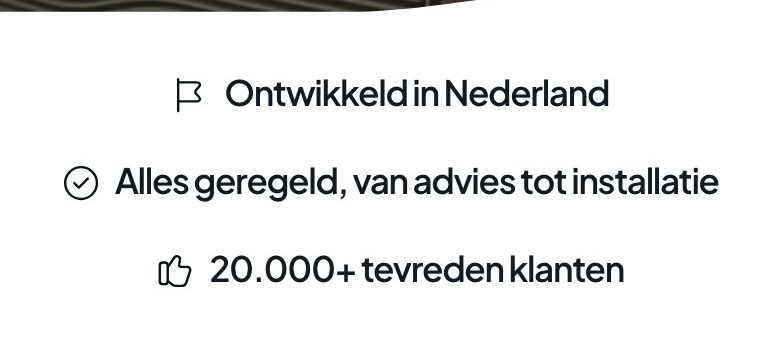
Quatt (NL)Trzy wiersze z ikonami: kraj powstania, zakres usługi od porady do montażu, 20.000+ zadowolonych klientów.
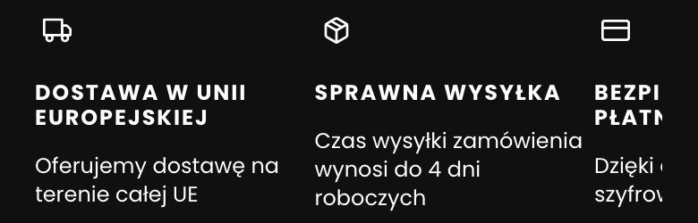
SoltechPasek z ikonami: dostawa w Unii Europejskiej, sprawna wysyłka, bezpieczna płatność.
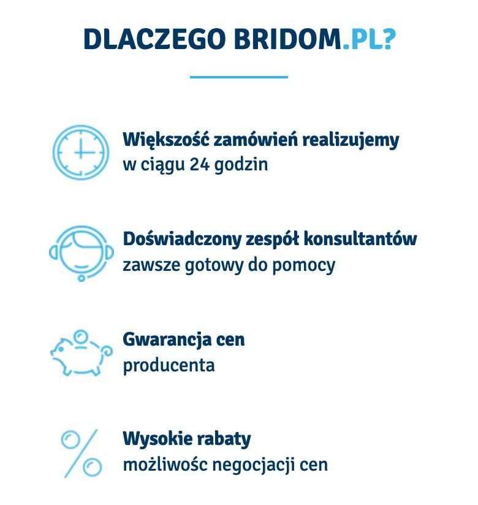
Bridom„Dlaczego Bridom.pl?”: cztery powody z ikonami — realizacja w 24 godziny, zespół konsultantów, gwarancja cen producenta, rabaty.
Dziś
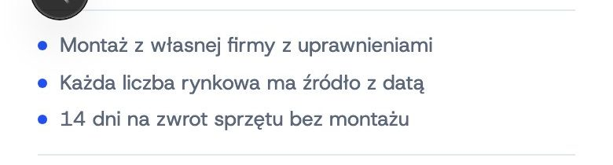
Dziś: trzy zdania z niebieskimi kropkami, bez ikon.
Projekt
1Montaż z własnej firmy z uprawnieniami
Każda liczba rynkowa ma źródło z datą
14 dni na zwrot sprzętu bez montażu
2Dotacja policzona na paragonie, przed zakupem
Zmiany
✎ ZmianaIkony przy każdej pozycji; pasek w dwóch kolumnach na telefonie.
＋ NoweCzwarta pozycja: „Dotacja policzona na paragonie, przed zakupem”.
Znaczniki na projekcie
1HP-04.1＋ NoweDotacja na paragonie jako czwarta obietnica
2HP-04.2✎ ZmianaIkony przy obietnicach
DlaczegoObecne trzy obietnice 1:1, ikony i czwarta pozycja o dotacji na paragonie.kliknij, aby rozwinąć
KupującyObawy kupującego przy wysokim bilecie to „kto mi to zamontuje i czy gwarancja nie przepadnie” (pompa) i „czy się łapię na dotację” (oba produkty).Czytaj więcejDwie z trzech obecnych obietnic odpowiadają na pierwszą; czwarta odpowiada na drugą.
RynekPasek zaufania ma 3 z 8 sklepów PL i 5 z 11 razem, więc nie spełnia normy ani w PL, ani po dodaniu UE.Czytaj więcejQuatt buduje go z trzech pozycji z ikonami: kraj powstania, zakres usługi od porady do instalacji i 20 000+ klientów; Soltech ma paski z dostawą i terminem wysyłki; Bridom listę czterech powodów.
UXDziś pasek to trzy zdania bez ikon, w kolorze szarym i na dole hero (818 px); ikony czynią go skanowalnym i oddzielają od treści.Czytaj więcejPozycje bez liczb są bezpieczne: żadna nie obiecuje czegoś, czego nie ma.
Testy A/B — 5 propozycji · 1 z grafiką kliknij, aby rozwinąćTest 1 · A/BPasek nad hero kontra pod heroz grafiką
Hipoteza: Jeśli pasek zaufania stanie nad hero w jednym wierszu, to więcej osób zostanie na stronie, bo obietnica pojawi się, zanim zobaczą ofertę.
Wariant APasek pod hero, cztery pozycje w dwóch kolumnach.
Wariant BPasek nad hero, trzy pozycje w jednym wierszu.
Dowód: Flairmax pokazuje znak zaufania w nagłówku.
Metryka główna: Odbicia ze strony głównej
Pomocnicze:
Przejście na listę
Warunek: Po starcie sprzedaży, min. 200 sesji na wariant; do tego czasu przegląd nagrań sesji (Clarity) i porównanie przed/po.
Próba: min. 200 sesji na wariant
Zastępczo: przed/po 14 dni + 20 nagrań sesji z elementem w widoku
Odwracalny
Wariant B — jak wygląda
Montaż z uprawnieniamiDotacja na paragonie14 dni zwrotu
Pompa ciepła albo bank energii. Z ceną. Montaż jako osobna pozycja.
Test 2 · A/BDotacja w pasku kontra uprawnienia
Hipoteza: Jeśli w pasku zamiast pozycji o dotacji pojawi się „Uprawnienia SEP i F-gaz”, to więcej osób zaufa montażowi, bo dotyczy blokera instalatora.
Wariant ADotacja na paragonie.
Wariant BUprawnienia montażysty (po zebraniu danych firmy).
Metryka główna: Przejście na listę
Warunek: Po starcie sprzedaży, min. 200 sesji na wariant; do tego czasu przegląd nagrań sesji (Clarity) i porównanie przed/po.
Próba: min. 200 sesji na wariant
Zastępczo: przed/po 14 dni + 20 nagrań sesji z elementem w widoku
Odwracalny
Test 3 · A/BIkony kontra kropki
Hipoteza: Jeśli zostaną niebieskie kropki, to pasek będzie lżejszy, a odbiór taki sam.
Wariant AIkony.
Wariant BKropki.
Metryka główna: Przewinięcie poniżej paska
Warunek: Po starcie sprzedaży, min. 200 sesji na wariant; do tego czasu przegląd nagrań sesji (Clarity) i porównanie przed/po.
Próba: min. 200 sesji na wariant
Zastępczo: przed/po 14 dni + 20 nagrań sesji z elementem w widoku
Odwracalny
Test 4 · A/BDwie kolumny kontra jedna
Hipoteza: Jeśli pasek będzie w jednej kolumnie, to tekst będzie łatwiejszy do przeczytania na telefonie, bo każda pozycja ma pełną szerokość.
Wariant ADwie kolumny.
Wariant BJedna kolumna.
Metryka główna: Przewinięcie poniżej paska
Warunek: Po starcie sprzedaży, min. 200 sesji na wariant; do tego czasu przegląd nagrań sesji (Clarity) i porównanie przed/po.
Próba: min. 200 sesji na wariant
Zastępczo: przed/po 14 dni + 20 nagrań sesji z elementem w widoku
Odwracalny
Test 5 · A/BLiczba klientów po starcie
Hipoteza: Jeśli po pierwszych montażach dodamy pozycję „[N] zamontowanych instalacji”, to więcej osób zaufa, bo liczba jest dowodem.
Wariant ACztery obietnice.
Wariant BCztery obietnice i „[N] zamontowanych instalacji”.
Dowód: Quatt: 20 000+ klientów.
Metryka główna: Przejście na listę
Warunek: Dopiero po pierwszych montażach i z prawdziwą liczbą.
Próba: min. 200 sesji na wariant
Zastępczo: przed/po 14 dni + 20 nagrań sesji z elementem w widoku
Odwracalny
HP-05
Najczęściej wybierane: kafle produktów na stronie głównej
DODAJEMY
Pod hero i paskiem zaufania sekcja z czterema kaflami produktów: cena po dotacji z montażem jako główna liczba i plakietka „Najczęstsza pojemność w domach” tylko przy 10 kWh (z danych rynku). Kafle są wspólne z listą produktów. Kolejność według ceny, dopóki nie ma danych o zamówieniach.
Najlepsze na rynku
Bridom: karuzela „Bestsellery” z plakietkami BESTSELLER i PROMOCJA, ceną, ceną przekreśloną, gwiazdkami i terminem wysyłki.
Solvolte: karuzela „Polecane produkty” z ceną i linią „Rata 0% już od: 38,00 zł”.
Boxt: cena „Installed from £4,799” na kafelku pompy i przycisk wyceny.
Sofar sklep: karta „Bestsellery” z jednym produktem, nazwą, ceną i ikoną koszyka.
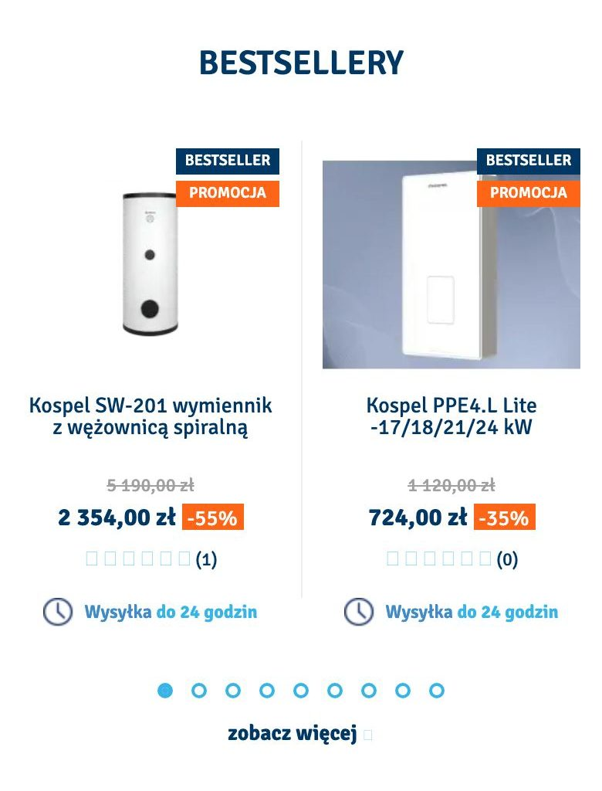
BridomKaruzela „Bestsellery”: dwa kafle z plakietkami BESTSELLER i PROMOCJA, ceną, ceną przekreśloną, gwiazdkami i „Wysyłka do 24 godzin”.
SolvolteKaruzela „Polecane produkty”: kafle z plakietką „Tylko online”, ceną i linią „Rata 0% już od”.
Boxt (UK)Karta „Heat pumps — Installed from £4,799”: cena pompy z montażem na stronie głównej, przycisk wyceny.
Sofar sklepKarta „Bestsellery” z jednym produktem: nazwa, cena 5 199,00 zł i ikona koszyka.
＋ NoweSekcja „Najczęściej wybierane” z czterema kaflami: trzy banki i pompa 8 kW.
＋ NowePlakietka „Najczęstsza pojemność w domach” przy 10 kWh: z kategorii (dom jednorodzinny zwykle 10 kWh), nie ze sprzedaży.
＋ NowePrzy pompie „cena wkrótce”: kafel z przyciskiem „Powiadom mnie”.
Znaczniki na projekcie
1HP-05.1＋ NowePlakietka rynkowa
2HP-05.2＋ NoweCena po dotacji z montażem jako główna liczba
3HP-05.3＋ NoweSekcja z kaflami produktów
4HP-05.4＋ NoweDo pierwszych zamówień kolejność według ceny
DlaczegoCztery kafle z ceną po dotacji z montażem; plakietka rynkowa przy 10 kWh; ranking sprzedaży dopiero po danych.kliknij, aby rozwinąć
KupującyKupujący bank chce wybrać klasę (pojemność rozstrzyga 95,9% wyszukań) i od razu zobaczyć, ile zapłaci razem; dziś widzi to dopiero po wejściu na listę lub na 2 700 px.Czytaj więcejWśród klas najczęściej wskazywana jest 10 kWh (kategoria: dom jednorodzinny zwykle 5–15 kWh, najczęściej 10 kWh), więc plakietka opiera się na danych rynku, nie na naszej sprzedaży.
RynekKafle kategorii pod hero ma 7 z 8 sklepów PL (sklep ma je już); kafle produktów lub bestsellery 3 z 8 PL (Bridom, KupPanPompe, Sofar), Flairmax ramkę „Topseller”, Solvolte karuzelę „Polecane produkty” z ceną i ratą, Boxt cenę „Installed from £4,799” na stronie głównej.Czytaj więcejCeny z montażem na stronie głównej to rzadkość w PL.
UXKafle kategorii „Wybierz, od czego zaczynasz” zostają bez zmian; nowa sekcja jest drugą warstwą (konkretne klasy).Czytaj więcejZ F2 bierzemy sekcję „Najczęściej kupowane”, ale bez plakietki opartej na zamówieniach, bo zamówień nie ma — plakietka rynkowa ma podpis źródła.
Testy A/B — 5 propozycji · 1 z grafiką kliknij, aby rozwinąćTest 1 · A/BDuży kafel rekomendowany kontra siatka czterechz grafiką
Hipoteza: Jeśli jeden duży kafel (10 kWh) zastąpi siatkę czterech, to więcej osób przejdzie do karty, bo wybór jest prostszy.
Wariant ACztery kafle w siatce.
Wariant BJeden duży kafel „Dla większości domów z PV” i linki do pozostałych.
Dowód: Quatt oznacza jeden model „Meest gekozen” i nie ukrywa pozostałych.
Metryka główna: Przejście na kartę produktu
Pomocnicze:
Przejście na listę
Warunek: Po starcie sprzedaży, min. 200 sesji na wariant; do tego czasu przegląd nagrań sesji (Clarity) i porównanie przed/po.
Próba: min. 200 sesji na wariant
Zastępczo: przed/po 14 dni + 20 nagrań sesji z elementem w widoku
Test 2 · A/BPrzycisk na kaflu: paragon kontra koszyk
Hipoteza: Jeśli przycisk będzie „Do koszyka z montażem”, to więcej osób doda produkt do koszyka, bo odpada krok wejścia na kartę.
Wariant A„Zobacz paragon”.
Wariant B„Do koszyka z montażem”.
Dowód: Dodanie do koszyka z kafla jest w 5 z 8 sklepów PL, ale w 5 z 10 razem.
Metryka główna: Dodanie do koszyka
Pomocnicze:
Przejście na kartę
Zwroty z koszyka
Warunek: Po starcie sprzedaży, min. 200 sesji na wariant; do tego czasu przegląd nagrań sesji (Clarity) i porównanie przed/po.
Próba: min. 200 sesji na wariant
Zastępczo: przed/po 14 dni + 20 nagrań sesji z elementem w widoku
Odwracalny
Test 3 · A/BSortowanie sekcji: cena kontra pojemność
Hipoteza: Jeśli kafle ułożymy od najmniejszej pojemności, to więcej osób znajdzie swoją klasę, bo pojemność rozstrzyga wybór.
Wariant AKolejność według ceny.
Wariant BKolejność według pojemności 5–20 kWh.
Metryka główna: Przejście na kartę
Warunek: Po starcie sprzedaży, min. 200 sesji na wariant; do tego czasu przegląd nagrań sesji (Clarity) i porównanie przed/po.
Próba: min. 200 sesji na wariant
Zastępczo: przed/po 14 dni + 20 nagrań sesji z elementem w widoku
Odwracalny
Test 4 · A/BDwa banki i pompa kontra cztery banki
Hipoteza: Jeśli w sekcji będą cztery banki (bez pompy), to kupujący banki szybciej wybiorą klasę, a kupujący pompy nie stracą wejścia, bo mają przełącznik.
Wariant ATrzy banki i pompa.
Wariant BCztery banki.
Metryka główna: Przejście na kartę banku
Warunek: Po starcie sprzedaży, min. 200 sesji na wariant; do tego czasu przegląd nagrań sesji (Clarity) i porównanie przed/po.
Próba: min. 200 sesji na wariant
Zastępczo: przed/po 14 dni + 20 nagrań sesji z elementem w widoku
Odwracalny
Test 5 · A/BPlakietka rynkowa kontra brak
Hipoteza: Jeśli plakietka „Najczęstsza pojemność w domach” zniknie, to kupujący bank będą rozważać wszystkie klasy porównywalnie, a odbiór ceny się nie zmieni.
Wariant APlakietka przy 10 kWh.
Wariant BBez plakietki.
Dowód: Quatt: plakietka „Meest gekozen” na modelu Hybrid Duo.
Metryka główna: Wybór klasy 10 kWh
Warunek: Po starcie sprzedaży, min. 200 sesji na wariant; do tego czasu przegląd nagrań sesji (Clarity) i porównanie przed/po.
Próba: min. 200 sesji na wariant
Zastępczo: przed/po 14 dni + 20 nagrań sesji z elementem w widoku
Odwracalny
Decyzja Ceny kafli i plakietka wymagają decyzji o dostawcy i cenniku montażu; kafel pompy „cena wkrótce” do czasu cennika.
HP-06
Narzędzia: lista konfiguratorów
DODAJEMY
Siatka narzędzi: przy każdym pytanie kupującego i uczciwy status „działa” lub „wkrótce”. Dziś działa jedno (dobór banku do falownika), reszta powstaje: dotacja Mój Prąd, zgodność falownika, oszczędność, dobór mocy pompy, pompa kontra gaz. Lista zastępuje pojedynczy przycisk jako wejście do wszystkich narzędzi.
Najlepsze na rynku
Flairmax: „Klimaplaner” jako czwarty kafel w siatce wejść obok kategorii.
KupPanPompe: baner „Kalkulator Pomp Ciepła” z opisem i przyciskiem „Przejdź do kalkulatora”.
Columbus: kalkulator osadzony w ofercie w trzech krokach (stan obecny, opłacalność, wycena) i quiz wyboru sytuacji.
GeoPower: program doboru 8 pytań z wynikiem: moc, koszty roczne, trzy warianty.
Flairmax (DE)Cztery kafle w siatce: 1 pomieszczenie, 2, 3 i kafel „Klimaplaner” z ikoną pytajnika.
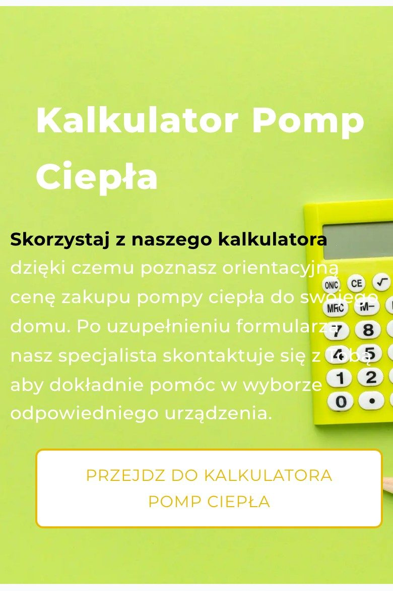
KupPanPompeZielony baner „Kalkulator Pomp Ciepła” z krótkim opisem i przyciskiem „Przejdź do kalkulatora”.
Columbus EnergyPanel „Otrzymaj ofertę skrojoną pod siebie!”: wybór sytuacji i przycisk „Dalej”.
KupPanPompeZielony pas z przyciskiem „Kalkulator doboru pomp ciepła”.
＋ NoweSześć narzędzi w siatce z pytaniem kupującego i statusem; link „Wszystkie (10)”.
＋ NoweDobór banku do falownika jako jedyne działające narzędzie (status „działa”).
＋ NoweLink do pełnej listy dziesięciu narzędzi.
Znaczniki na projekcie
1HP-06.1＋ NoweNarzędzie, które działa dziś
2HP-06.2＋ NoweNarzędzia, które dopiero powstają, z uczciwym statusem
3HP-06.3＋ NowePełna lista narzędzi
DlaczegoSześć narzędzi z pytaniem i statusem; link do pełnej listy dziesięciu.kliknij, aby rozwinąć
KupującyPunkty wejścia banku rozkładają się na trzy narzędzia: dotacja (9 320 fraz miesięcznie), dobór do instalacji (6 860, 56 pytań) i oszczędność przy net-billingu (4 480).Czytaj więcejPompa ma własne: dobór mocy („serce kategorii”, frycowe za zbyt dużą pompę) i porównanie kosztu ogrzewania z gazem („czy się opłaca”).
RynekNarzędzia doboru mają: KupPanPompe (kalkulator doboru pomp i program dotacyjny jako osobne wejścia), GeoPower (program doboru: 8 pytań → moc, koszty roczne, 3 warianty), Columbus (kalkulator w stronie oferty: stan obecny, opłacalność, wycena i quiz „skrojona oferta”), Flairmax (Klimaplaner jako kafel w siatce wejść).Czytaj więcejŻaden sklep PL nie pokazuje listy narzędzi.
UXZ F2 bierzemy „narzędzia z opisem pytania”, bo opis pytania to to, co robią rywale (przy narzędziu stoi sytuacja, nie nazwa).Czytaj więcejStatus „wkrótce” jest widoczny — kupujący nie klika w coś, co nie działa. Przy 390 px sześć kart po ~110 px mieści się w jednym przewinięciu.
Testy A/B — 5 propozycji · 1 z grafiką kliknij, aby rozwinąćTest 1 · A/BSześć narzędzi kontra trzy z „pokaż wszystkie”z grafiką
Hipoteza: Jeśli pokażemy trzy narzędzia i przycisk „Pokaż wszystkie (10)”, to więcej osób wejdzie w narzędzie, bo wybór jest mniejszy.
Wariant ASześć kart.
Wariant BTrzy karty i przycisk.
Dowód: Flairmax pokazuje jedno narzędzie wśród kafli wejścia.
Metryka główna: Rozpoczęcie narzędzia
Pomocnicze:
Przewinięcie poniżej sekcji
Warunek: Po starcie sprzedaży, min. 200 sesji na wariant; do tego czasu przegląd nagrań sesji (Clarity) i porównanie przed/po.
Próba: min. 200 sesji na wariant
Zastępczo: przed/po 14 dni + 20 nagrań sesji z elementem w widoku
Test 2 · A/BStatus „wkrótce” kontra ukrycie nieczynnych
Hipoteza: Jeśli ukryjemy narzędzia ze statusem „wkrótce”, to więcej osób kliknie w działające, ale zniknie sygnał, że sklep rośnie.
Wariant APokazane z etykietą.
Wariant BUkryte do uruchomienia.
Metryka główna: Rozpoczęcie narzędzia
Warunek: Po starcie sprzedaży, min. 200 sesji na wariant; do tego czasu przegląd nagrań sesji (Clarity) i porównanie przed/po.
Próba: min. 200 sesji na wariant
Zastępczo: przed/po 14 dni + 20 nagrań sesji z elementem w widoku
Odwracalny
Test 3 · A/BPytanie kupującego kontra nazwa narzędzia
Hipoteza: Jeśli opis będzie nazwą narzędzia („Kalkulator dotacji”), to mniej osób je rozpozna niż przy pytaniu („Ile dostanę na bank i EMS?”).
Wariant APytanie.
Wariant BNazwa.
Dowód: Opisy narzędzi u rywali to nazwy; pytanie przy narzędziu jest naszą propozycją.
Metryka główna: Rozpoczęcie narzędzia
Warunek: Po starcie sprzedaży, min. 200 sesji na wariant; do tego czasu przegląd nagrań sesji (Clarity) i porównanie przed/po.
Próba: min. 200 sesji na wariant
Zastępczo: przed/po 14 dni + 20 nagrań sesji z elementem w widoku
Odwracalny
Test 4 · A/BKolejność: dotacja przed doborem
Hipoteza: Jeśli kalkulator dotacji stanie pierwszy, to więcej osób zacznie narzędzie, bo dotacja ma większy popyt niż dobór.
Wariant ADobór pierwszy.
Wariant BDotacja pierwsza.
Metryka główna: Rozpoczęcie narzędzia
Warunek: Po starcie sprzedaży, min. 200 sesji na wariant; do tego czasu przegląd nagrań sesji (Clarity) i porównanie przed/po.
Próba: min. 200 sesji na wariant
Zastępczo: przed/po 14 dni + 20 nagrań sesji z elementem w widoku
Odwracalny
Test 5 · A/BSiatka kontra karuzela
Hipoteza: Jeśli narzędzia będą w poziomej karuzeli, to strona będzie krótsza, ale mniej osób zobaczy drugie narzędzie.
Wariant ASiatka jedna kolumna.
Wariant BKaruzela.
Dowód: Flairmax i Quatt używają karuzeli i siatki; karuzele zasłaniają elementy poza ekranem.
Metryka główna: Rozpoczęcie narzędzia
Warunek: Po starcie sprzedaży, min. 200 sesji na wariant; do tego czasu przegląd nagrań sesji (Clarity) i porównanie przed/po.
Próba: min. 200 sesji na wariant
Zastępczo: przed/po 14 dni + 20 nagrań sesji z elementem w widoku
Odwracalny
HP-07
Jak zacząć kupowanie banku i pompy
ZAMIANA
Cztery kroki „Tak to u nas wygląda” zostają co do słowa; pod nimi dwa wejścia: Jak zacząć kupowanie banku energii i Jak zacząć kupowanie pompy ciepła. Po kliknięciu: podstrona z sześcioma krokami, narzędziem albo produktem przy każdym i kaflami produktów w treści.
Najlepsze na rynku
Boxt: „How does BOXT work?” — trzy kroki Discover, Choose, Install ze zdjęciami i przyciskiem „Learn more”.
Quatt: cztery rozwijane kroki (start z Hybrid, gasvrij, chłodzenie, magazyn) i ilustracja domu w przekroju.
Hello Watt: trzy zakładki na starcie (zużycie, remont, dostawca) i lista kroków z ikonami.
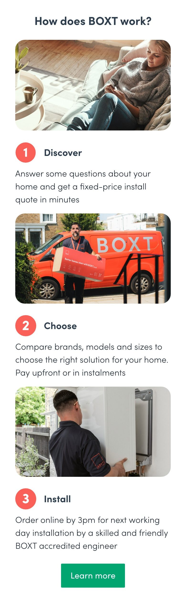
Boxt (UK)Nagłówek „How does BOXT work?” i trzy kroki (Discover, Choose, Install) ze zdjęciem i krótkim opisem.
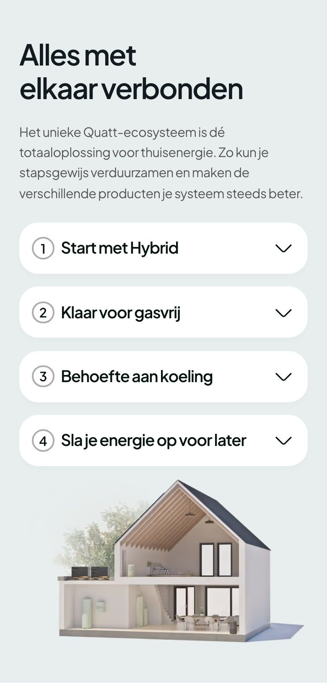
Quatt (NL)Nagłówek „Alles met elkaar verbonden” i cztery rozwijane kroki z numerami; pod spodem ilustracja domu w przekroju.
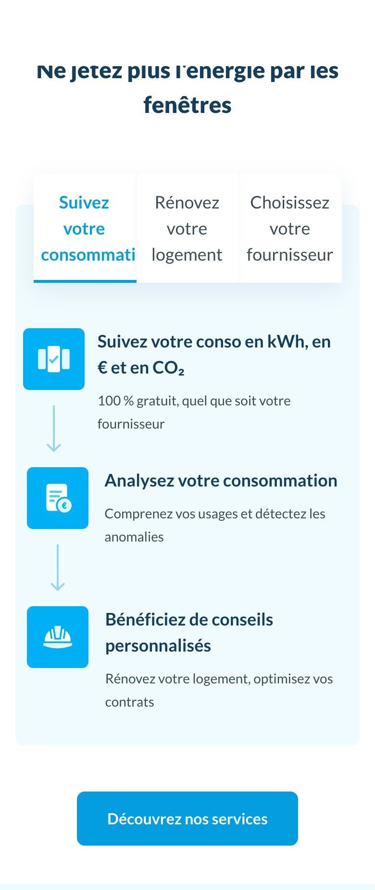
Hello Watt (FR)Nagłówek, trzy zakładki (Suivez votre consommation, Rénovez votre logement, Choisissez votre fournisseur) i lista trzech kroków z ikonami.
Dziś
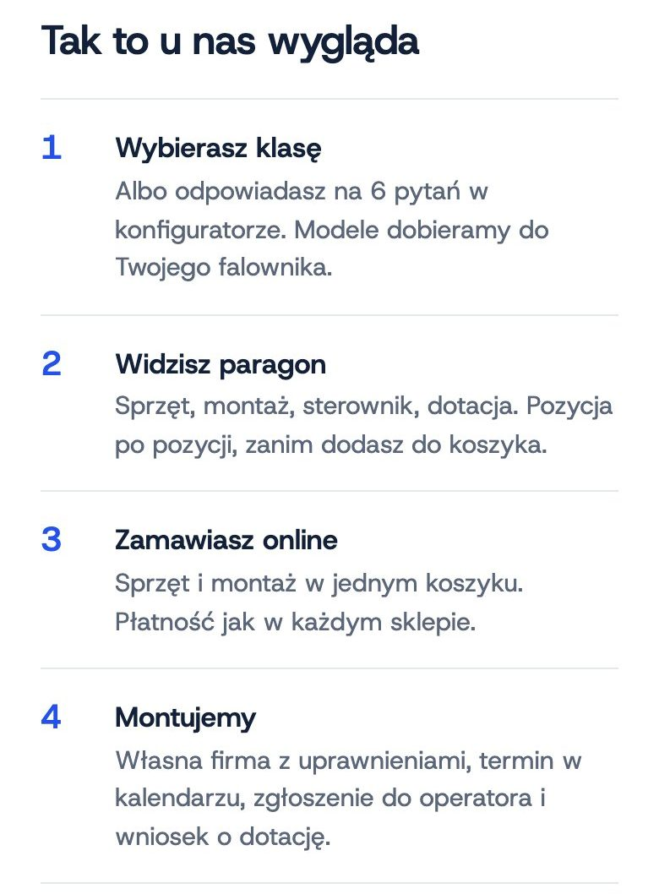
Dziś: „Tak to u nas wygląda”, cztery kroki z numerami, bez linków.
Projekt
Tak to u nas wygląda
1Wybierasz klasę
Albo odpowiadasz na 6 pytań w konfiguratorze. Modele dobieramy do Twojego falownika.
2Widzisz paragon
Sprzęt, montaż, sterownik, dotacja. Pozycja po pozycji, zanim dodasz do koszyka.
3Zamawiasz online
Sprzęt i montaż w jednym koszyku. Płatność jak w każdym sklepie.
4Montujemy
Własna firma z uprawnieniami, termin w kalendarzu, zgłoszenie do operatora i wniosek o dotację.
Sześć kroków od „mam fotowoltaikę” do zamówionego banku z montażem. Przy każdym kroku narzędzie, które odpowie za Ciebie, i cena, zanim z kimkolwiek porozmawiasz.
Doradca · zweryfikował monter6 min czytaniazaktualizowano 28.10.2026
W skrócie
Zacznij od falownika: od niego zależy, czy bank podłączysz bez wymiany sprzętu.
Pojemność liczy się z tego, ile prądu zużywasz po zmroku, a nie z metrażu domu.
Dotacja Mój Prąd to do 800 zł za kWh i wymaga sterownika EMS.
1
Sprawdź, jaki masz falownik
2 min
Marka i model są na tabliczce falownika albo w aplikacji instalacji. Falownik hybrydowy przyjmie bank tej samej marki bezpośrednio (DC). Falownik sieciowy wymaga banku z własnym falownikiem (AC) albo wymiany falownika.
DlaczegoCztery kroki 1:1 i dwa wejścia „Jak zacząć” (bank, pompa) z podstroną sześciu kroków.kliknij, aby rozwinąć
KupującyPytania „od czego zacząć” są w obu kategoriach (bank: „Od czego zacząć, żeby sprawdzić, czy magazyn energii ma sens przy mojej instalacji PV?”; pompa: „kocioł ma 15 lat — wymienić czy poczekać”).Czytaj więcejKupujący potrzebuje ścieżki od sytuacji do zamówienia, a nie listy artykułów.
RynekBoxt ma trzy kroki „How does BOXT work?” (1 z 8 PL), Quatt cztery rozwijane etapy rozbudowy systemu, Hello Watt cztery przewodniki z celem (zużycie, ogrzewanie, solar, sterowanie) i trzy zakładki na starcie.Czytaj więcejWzorzec: jedna ścieżka krok po kroku, przy każdym kroku następne działanie.
UXCztery obecne kroki opisują, jak działa sklep, a nie jak zacząć; dwie karty „Jak zacząć” nie zmieniają ich, tylko dokładają wejście do konkretnej drogi.Czytaj więcejZ F2 bierzemy dwie karty i podstronę „Jak zacząć”, bo analiza uzasadnia ścieżkę; treść pochodzi z katalogu treści sklepu (szkice, status „szkic”).
Testy A/B — 5 propozycji · 1 z grafiką kliknij, aby rozwinąćTest 1 · A/BDwie karty kontra przełącznik bank/pompaz grafiką
Hipoteza: Jeśli jedna karta będzie miała przełącznik bank/pompa, to strona będzie krótsza, a liczba kliknięć w „Jak zacząć” zostanie taka sama.
Wariant ADwie karty obok siebie (jedna pod drugą na telefonie).
Wariant BJedna karta z przełącznikiem.
Dowód: Hello Watt używa zakładek do wyboru ścieżki.
Metryka główna: Klik w „Jak zacząć”
Pomocnicze:
Odbicia ze strony głównej
Warunek: Po starcie sprzedaży, min. 200 sesji na wariant; do tego czasu przegląd nagrań sesji (Clarity) i porównanie przed/po.
Próba: min. 200 sesji na wariant
Zastępczo: przed/po 14 dni + 20 nagrań sesji z elementem w widoku
Hipoteza: Jeśli karty będą nad czterema krokami, to więcej osób otworzy poradnik, bo zobaczą go wcześniej.
Wariant AKarty pod krokami.
Wariant BKarty nad krokami.
Metryka główna: Klik w „Jak zacząć”
Warunek: Po starcie sprzedaży, min. 200 sesji na wariant; do tego czasu przegląd nagrań sesji (Clarity) i porównanie przed/po.
Próba: min. 200 sesji na wariant
Zastępczo: przed/po 14 dni + 20 nagrań sesji z elementem w widoku
Odwracalny
Test 3 · A/BLiczba kroków w nazwie
Hipoteza: Jeśli w karcie zniknie „6 kroków · 6 min”, to wynik się nie zmieni, a karta będzie krótsza.
Wariant AZ liczbą kroków i czasem.
Wariant BBez liczby.
Metryka główna: Klik w „Jak zacząć”
Warunek: Po starcie sprzedaży, min. 200 sesji na wariant; do tego czasu przegląd nagrań sesji (Clarity) i porównanie przed/po.
Próba: min. 200 sesji na wariant
Zastępczo: przed/po 14 dni + 20 nagrań sesji z elementem w widoku
Odwracalny
Test 4 · A/BZdjęcie produktu kontra ikona flagi
Hipoteza: Jeśli w karcie będzie ikona zamiast zdjęcia produktu, to karta będzie lżejsza, ale mniej rozpoznawalna.
Wariant AZdjęcie produktu 96 px.
Wariant BIkona flagi.
Metryka główna: Klik w „Jak zacząć”
Warunek: Po starcie sprzedaży, min. 200 sesji na wariant; do tego czasu przegląd nagrań sesji (Clarity) i porównanie przed/po.
Próba: min. 200 sesji na wariant
Zastępczo: przed/po 14 dni + 20 nagrań sesji z elementem w widoku
Odwracalny
Test 5 · A/BPierwszy krok jako narzędzie
Hipoteza: Jeśli pierwszy krok na stronie głównej będzie od razu polem „Jaki masz falownik?”, to więcej osób zacznie narzędzie, bo pierwsze pytanie jest tuż pod ręką.
Wariant AKarta z opisem.
Wariant BKarta z polem wyboru marki falownika.
Dowód: Flairmax: wybór pomieszczeń zaczyna ścieżkę na stronie głównej.
Metryka główna: Rozpoczęcie narzędzia zgodności
Warunek: Po starcie sprzedaży, min. 200 sesji na wariant; do tego czasu przegląd nagrań sesji (Clarity) i porównanie przed/po.
Próba: min. 200 sesji na wariant
Zastępczo: przed/po 14 dni + 20 nagrań sesji z elementem w widoku
Odwracalny
Decyzja Szkice poradników (bank, pompa) wymagają publikacji przez Tomka; do tej pory karty są nieaktywne.
HP-08
Artykuły z ikonami i typami
ZAMIANA
„Zanim kupisz”: trzy bloki bez linków i z napisem „poradnik w przygotowaniu” zamieniają się w listę artykułów z ikoną typu (Jak zacząć, Poradnik, Recenzja, Porównanie, Ranking, Kalkulacja), czasem czytania i linkiem. Linkiem jest tylko opublikowany artykuł; szkice są oznaczone „wkrótce”.
Najlepsze na rynku
Quatt: karty z linią „29 SEP 2026 / 6 MIN / KENNIS” nad tytułem — typ bez ikony.
Hello Watt: cztery kafle przewodników z ikoną, tytułem, opisem i strzałką.
Bridom: karuzela wpisów ze zdjęciem, tytułem, leadem i „Czytaj więcej”.
BridomNagłówek „Pomysły, inspiracje, trendy” i karuzela wpisów ze zdjęciem, tytułem, leadem i linkiem „Czytaj więcej”; kropki paginacji.
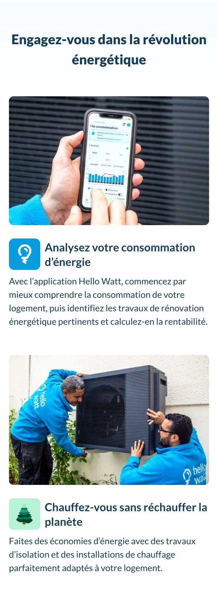
Hello Watt (FR)Nagłówek „Engagez-vous dans la révolution énergétique” i dwie pierwsze karty przewodników z ikoną, tytułem, opisem i strzałką.
Reguła 1–1,5 kWh na kWp, i dlaczego program dotacji liczy inaczej. wkrótce
Porównanie· 6 minJaka pompa ciepła do domu 150 m²
Moc z zapotrzebowania, nie z metrażu. Monoblok czy split. wkrótce
3Linkiem jest tylko opublikowany artykuł; szkice mają status „wkrótce”.
Zmiany
✎ ZmianaIkona typu i etykieta typu przy każdym artykule (z modelu treści).
✎ ZmianaCzas czytania i link tylko przy opublikowanych artykułach.
Aa TekstZamiast widocznego dziś tekstu środowiska testowego „poradnik w przygotowaniu” — etykieta „wkrótce” przy szkicach.
Znaczniki na projekcie
1HP-08.1＋ NoweIkona i typ artykułu
2HP-08.2✎ ZmianaCzas czytania
3HP-08.3Aa TekstSzkic oznaczony „wkrótce”, nie linkiem
DlaczegoIkona i typ, czas czytania, link tylko do opublikowanych; szkice jako „wkrótce”.kliknij, aby rozwinąć
KupującyKupujący chce wiedzieć, czy artykuł odpowie na jego pytanie, zanim go otworzy: „Jak zacząć” to inna obietnica niż „Porównanie” albo „Kalkulacja”.Czytaj więcejTyp i czas czytania skracają wybór; artykuły są wejściem dla kupujących na etapie nauki kategorii.
RynekQuatt pokazuje nad tytułem linię „data / minuty czytania / typ” (KENNIS, NIEUWS); Hello Watt prowadzi z kafli przewodników z opisem i strzałką; Bridom ma karuzelę wpisów z lead i „Czytaj więcej”.Czytaj więcejSekcja z artykułami na stronie głównej jest w 2 z 8 sklepów PL i 4 z 11 razem.
UXDziś bloki nie są linkami (elementy div) i zawierają tekst środowiska testowego („poradnik w przygotowaniu”), który kupujący zobaczyłby na żywo.Czytaj więcejZ F2 bierzemy listę artykułów z ikoną typu, bo to rozwiązuje oba braki; kolory ikon są stałe dla każdego typu.
Testy A/B — 5 propozycji · 1 z grafiką kliknij, aby rozwinąćTest 1 · A/BLista z ikonami kontra dwie duże karty ze zdjęciemz grafiką
Hipoteza: Jeśli artykuły dostaną duże karty ze zdjęciem, to więcej osób je otworzy, bo zdjęcie przyciąga wzrok.
Wariant ALista z ikonami typu.
Wariant BDwie karty ze zdjęciem i etykietą typu.
Dowód: Bridom używa zdjęć w kartach wpisów.
Metryka główna: Klik w artykuł
Pomocnicze:
Czas na stronie
Warunek: Po starcie sprzedaży, min. 200 sesji na wariant; do tego czasu przegląd nagrań sesji (Clarity) i porównanie przed/po.
Próba: min. 200 sesji na wariant
Zastępczo: przed/po 14 dni + 20 nagrań sesji z elementem w widoku
Hipoteza: Jeśli zostanie sama ikona typu, to lista będzie lżejsza, a rozpoznawanie typu się nie zmieni.
Wariant AIkona i słowo (Poradnik, Porównanie…).
Wariant BSama ikona.
Metryka główna: Klik w artykuł
Warunek: Po starcie sprzedaży, min. 200 sesji na wariant; do tego czasu przegląd nagrań sesji (Clarity) i porównanie przed/po.
Próba: min. 200 sesji na wariant
Zastępczo: przed/po 14 dni + 20 nagrań sesji z elementem w widoku
Odwracalny
Test 3 · A/BCzas czytania kontra data
Hipoteza: Jeśli zamiast czasu czytania pokażemy datę, to więcej osób zaufa aktualności, bo cena i dotacja zmieniają się co miesiąc.
Wariant ACzas czytania.
Wariant BData aktualizacji.
Dowód: Quatt pokazuje datę i czas razem.
Metryka główna: Klik w artykuł
Warunek: Po starcie sprzedaży, min. 200 sesji na wariant; do tego czasu przegląd nagrań sesji (Clarity) i porównanie przed/po.
Próba: min. 200 sesji na wariant
Zastępczo: przed/po 14 dni + 20 nagrań sesji z elementem w widoku
Odwracalny
Test 4 · A/BTrzy czy cztery artykuły
Hipoteza: Jeśli lista skróci się do trzech pozycji, to więcej osób kliknie którąś, bo jest mniej wyboru.
Wariant ACztery pozycje.
Wariant BTrzy pozycje.
Metryka główna: Klik w artykuł
Warunek: Po starcie sprzedaży, min. 200 sesji na wariant; do tego czasu przegląd nagrań sesji (Clarity) i porównanie przed/po.
Próba: min. 200 sesji na wariant
Zastępczo: przed/po 14 dni + 20 nagrań sesji z elementem w widoku
Odwracalny
Test 5 · A/BPierwszy artykuł: „Jak zacząć” kontra najpopularniejszy
Hipoteza: Jeśli na początku stanie najczęściej czytany artykuł (po zebraniu danych), to więcej osób kliknie, bo wybór pochodzi od innych.
Wariant AJak zacząć na pierwszym miejscu.
Wariant BNajczęściej czytany na pierwszym miejscu.
Metryka główna: Klik w artykuł
Warunek: Po zebraniu odsłon z analityki (okno 30 dni).
Próba: min. 200 sesji na wariant
Zastępczo: przed/po 14 dni + 20 nagrań sesji z elementem w widoku
Odwracalny
Decyzja Publikację artykułów (szkic → dane) wykonuje Tomek; do tej pory pozostałe pozycje są „wkrótce”.
HP-09
Rankingi popularności produktów i artykułów
DODAJEMYCZEKA NA DANE
Moduł „Najczęściej zamawiane i czytane”: dwa rankingi (produkty z zamówień, artykuły z odsłon), każdy z oknem 30 dni. Przed pierwszymi danymi moduł się nie wyświetla, a kafle są ułożone według ceny; pokazany jest stan docelowy i próg. Żaden numer miejsca nie jest wymyślony.
Najlepsze na rynku
Bridom: karuzela „Bestsellery” z plakietkami BESTSELLER przy kaflach.
Sofar sklep: karta „Bestsellery” z jednym produktem.
Quatt: plakietka „Meest gekozen” na modelu Hybrid Duo w sekcji cen (karta produktu).
Flairmax: ramka „Topseller” nad listą z jednym produktem.
BridomKaruzela „Bestsellery”: dwa kafle z plakietkami BESTSELLER i PROMOCJA, ceną i terminem wysyłki.
Sofar sklepKarta „Bestsellery” z jednym produktem: nazwa i cena 5 199,00 zł, ikona koszyka.
Dziś
Dziś tego nie ma
Element nowy — nie istnieje na obecnej stronie
Projekt
1Najczęściej zamawiane i czytane
Ranking pojawi się po pierwszych zamówieniach
Produkty: kolejność z zamówień ze sklepu w oknie 30 dni. Artykuły: odsłony z analityki w oknie 30 dni. Pokazujemy dopiero, gdy jest z czego liczyć ([próg: N zamówień / N odsłon]). Do tego czasu kafle są ułożone według ceny.
＋ NoweModuł z dwoma rankingami (produkty, artykuły); okno 30 dni.
＋ NoweReguła: moduł pojawia się dopiero po przekroczeniu progu zamówień i odsłon; do tego czasu kafle według ceny.
Znaczniki na projekcie
1HP-09.1＋ NoweStan przed danymi: wyjaśnienie i próg
2HP-09.2＋ NoweStan docelowy: miejsca 1–3 z liczbą zamówień i odsłon
DlaczegoDwa rankingi z oknem 30 dni; do pierwszych danych moduł jest ukryty, a kafle według ceny.kliknij, aby rozwinąć
KupującyKupujący bank i pompę pyta „co kupują inni” przy każdej decyzji wysokiego ryzyka; ranking odpowiada na to bez opinii.Czytaj więcejPozycja musi być prawdziwa: ranking z zamówień jest dowodem, a numer bez zamówień jest fałszem.
RynekBestsellery pokazują 3 z 8 sklepów PL (Bridom, KupPanPompe, Sofar), Quatt plakietkę „Meest gekozen” na najczęściej wybieranym modelu, Flairmax ramkę „Topseller”.Czytaj więcejW zrzutach Sofar i Bridom przy bestsellerach nie widać okna czasowego, więc nie wiadomo, z jakiego okresu jest ranking.
UXModel treści sklepu już definiuje ranking (zamówienia z Medusy w oknie 30 dni, odsłony z GA4) i zasadę „brak danych — moduł się nie pokazuje”; projekt ją tylko pokazuje.Czytaj więcejZ F2 bierzemy kształt rankingu (numer, tytuł, wartość), bo to kolejność.
Testy A/B — 5 propozycji · 1 z grafiką kliknij, aby rozwinąćTest 1 · A/BRanking jako moduł kontra numer na kafluz grafiką
Hipoteza: Jeśli ranking zamienimy na plakietkę „nr 1 w ostatnich 30 dniach” na kaflu, to więcej osób kliknie ten kafel, bo informacja stoi w miejscu decyzji.
Wariant AOsobny moduł z listą.
Wariant BPlakietka z miejscem na kaflu.
Dowód: Quatt: plakietka na modelu.
Metryka główna: Klik w kafel z plakietką
Pomocnicze:
Zamówienia
Warunek: Po przekroczeniu progu zamówień.
Próba: min. 200 sesji na wariant
Zastępczo: przed/po 14 dni + 20 nagrań sesji z elementem w widoku
Hipoteza: Jeśli okno rankingu będzie 90 dni, to ranking będzie stabilniejszy przy małej liczbie zamówień, a klikalność się nie zmieni.
Wariant A30 dni.
Wariant B90 dni.
Metryka główna: Klik w pozycję
Warunek: Po przekroczeniu progu zamówień.
Próba: min. 200 sesji na wariant
Zastępczo: przed/po 14 dni + 20 nagrań sesji z elementem w widoku
Odwracalny
Test 3 · A/BRanking po stronie głównej kontra na liście
Hipoteza: Jeśli ranking przeniesiemy z głównej na listę produktów, to więcej osób zobaczy go w miejscu wyboru klasy.
Wariant AStrona główna.
Wariant BLista produktów.
Metryka główna: Klik w pozycję
Warunek: Po starcie sprzedaży, min. 200 sesji na wariant; do tego czasu przegląd nagrań sesji (Clarity) i porównanie przed/po.
Próba: min. 200 sesji na wariant
Zastępczo: przed/po 14 dni + 20 nagrań sesji z elementem w widoku
Odwracalny
Test 4 · A/BLiczba zamówień przy pozycji kontra bez
Hipoteza: Jeśli przy pozycji pokażemy liczbę zamówień („48 zamówień”), to więcej osób zaufa rankingowi, bo liczba jest dowodem.
Wariant AZ liczbą.
Wariant BBez liczby.
Metryka główna: Klik w pozycję
Warunek: Po starcie sprzedaży, min. 200 sesji na wariant; do tego czasu przegląd nagrań sesji (Clarity) i porównanie przed/po.
Próba: min. 200 sesji na wariant
Zastępczo: przed/po 14 dni + 20 nagrań sesji z elementem w widoku
Odwracalny
Test 5 · A/BDwa rankingi kontra jeden
Hipoteza: Jeśli zostanie sam ranking produktów, to moduł będzie krótszy, a ranking artykułów wróci po zebraniu odsłon.
Wariant ADwa rankingi.
Wariant BJeden ranking.
Metryka główna: Klik w pozycję
Warunek: Po starcie sprzedaży, min. 200 sesji na wariant; do tego czasu przegląd nagrań sesji (Clarity) i porównanie przed/po.
Próba: min. 200 sesji na wariant
Zastępczo: przed/po 14 dni + 20 nagrań sesji z elementem w widoku
Odwracalny
Decyzja Próg pokazania rankingu (liczba zamówień i odsłon) ustala Tomek po pierwszych tygodniach sprzedaży.
HP-10
Skrót do wideo
DODAJEMYOPCJONALNECZEKA NA DANE
Miejsce na krótkie wideo „Zobacz, jak wygląda montaż”: miniatura z czasem, jedno zdanie streszczenia, link. Wideo jeszcze nie istnieje, więc moduł nie wyświetla się do nagrania; ta sekcja jest opcjonalna.
Najlepsze na rynku
Quatt: nagłówek „Al 20.000+ huishoudens vertrouwen op Quatt” i dwa wideo-kafle klientów z napisem „Klantverhalen”, ikoną odtwarzania i imieniem.
Flairmax: cztery paski wideo na karcie produktu (nazwy: test w komorze zimna, test w komorze dźwiękowej).
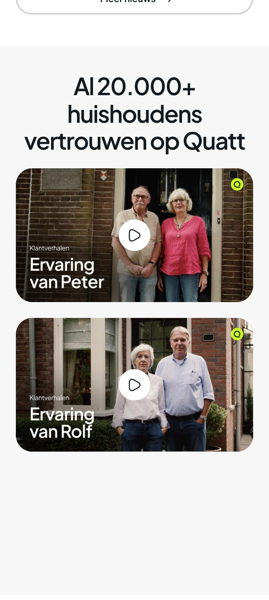
Quatt (NL)Nagłówek z liczbą klientów i dwa wideo-kafle z imieniem klienta, ikoną odtwarzania i podpisem „Klantverhalen”.
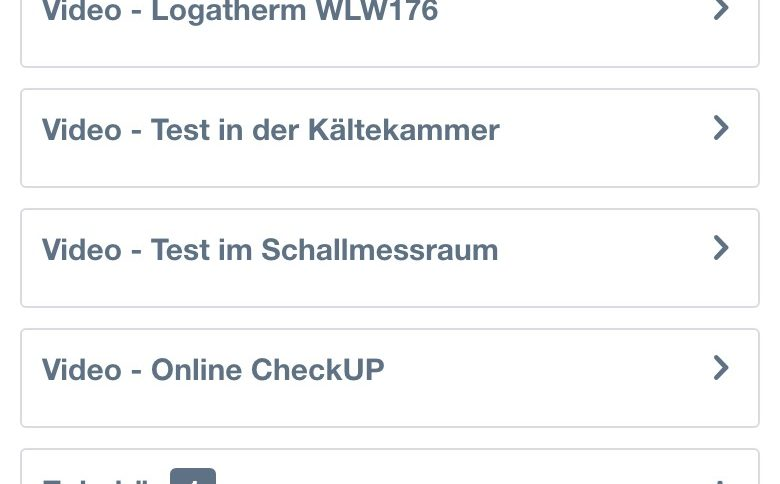
Flairmax (DE)Cztery paski „Video — …” na liście pod plikami do pobrania: nazwy opisują treść (test w komorze zimna, test w komorze dźwiękowej).
3Wideo nie istnieje: moduł czeka na nagranie montażu. Bez nagrania sekcja się nie wyświetla.
Zmiany
＋ NoweKafel wideo: miniatura z czasem nagrania, tytuł, streszczenie.
＋ NoweModuł ukryty do czasu nagrania.
Znaczniki na projekcie
1HP-10.1＋ NoweMiniatura wideo z czasem
2HP-10.2＋ NoweStreszczenie: co widać w nagraniu
3HP-10.3＋ NoweModuł czeka na nagranie
DlaczegoKafel wideo z czasem i streszczeniem; moduł ukryty do czasu nagrania.kliknij, aby rozwinąć
KupującyKupujący pompę pyta „kto mi to zamontuje i jak to wygląda” (instalator = bloker); nagranie montażu odpowiada na to szybciej niż tekst.Czytaj więcejSklep nie ma jeszcze nagrań, więc materiał trzeba wykonać.
RynekWideo klientów (Klantverhalen) ma Quatt w dwóch kaflach na stronie głównej, Flairmax cztery nagrania na karcie produktu (test w komorze zimna, test hałasu, instalacja), Sofar jedno wideo produktu; w 8 sklepach PL wideo na stronie głównej nie ma.
UXDowód jest słaby: wzorce na stronie głównej to wideo klientów u jednego sklepu (Quatt); w PL nie ma żadnego.Czytaj więcejDlatego element jest oznaczony jako opcjonalny. Z F2 bierzemy kafel wideo z czasem, ale bez zmyślonych tytułów.
Testy A/B — 5 propozycji · 1 z grafiką kliknij, aby rozwinąćTest 1 · A/BWideo w sekcji kontra odtwarzacz na zdjęciu heroz grafiką
Hipoteza: Jeśli przycisk „Zobacz montaż” trafi na zdjęcie hero, to więcej osób odtworzy wideo, bo jest widoczne bez przewijania.
Wariant ASekcja „Zobacz, jak wygląda montaż”.
Wariant BPrzycisk odtwarzania na zdjęciu hero.
Dowód: Quatt: wideo w tle hero z przyciskiem pauzy.
Metryka główna: Odtworzenie wideo
Pomocnicze:
Czas na stronie
Warunek: Po nagraniu wideo.
Próba: min. 200 sesji na wariant
Zastępczo: przed/po 14 dni + 20 nagrań sesji z elementem w widoku
Hipoteza: Jeśli nagranie będzie trwało 90 sekund, to więcej osób obejrzy do końca.
Wariant AWideo 4:30.
Wariant BWideo 1:30.
Metryka główna: Obejrzenie do połowy
Warunek: Po starcie sprzedaży, min. 200 sesji na wariant; do tego czasu przegląd nagrań sesji (Clarity) i porównanie przed/po.
Próba: min. 200 sesji na wariant
Zastępczo: przed/po 14 dni + 20 nagrań sesji z elementem w widoku
Odwracalny
Test 3 · A/BWideo klienta kontra wideo montażu
Hipoteza: Jeśli pierwszym nagraniem będzie wypowiedź klienta po montażu (nie nagranie montażu), to więcej osób zaufa, bo głos klienta jest dowodem.
Wariant ANagranie montażu.
Wariant BNagranie klienta.
Dowód: Quatt: wideo klientów.
Metryka główna: Odtworzenie wideo
Warunek: Po pierwszych montażach i za zgodą klienta.
Próba: min. 200 sesji na wariant
Zastępczo: przed/po 14 dni + 20 nagrań sesji z elementem w widoku
Odwracalny
Test 4 · A/BMiniatura ze zdjęciem montera kontra z ekranem produktu
Hipoteza: Jeśli miniatura pokaże montera, to więcej osób kliknie, bo widać człowieka.
Wariant AMonter.
Wariant BProdukt.
Metryka główna: Odtworzenie wideo
Warunek: Po starcie sprzedaży, min. 200 sesji na wariant; do tego czasu przegląd nagrań sesji (Clarity) i porównanie przed/po.
Próba: min. 200 sesji na wariant
Zastępczo: przed/po 14 dni + 20 nagrań sesji z elementem w widoku
Odwracalny
Test 5 · A/BNapisy przy odtwarzaniu
Hipoteza: Jeśli wideo będzie miało napisy domyślnie włączone, to więcej osób obejrzy na telefonie bez dźwięku.
Wariant ABez napisów.
Wariant BNapisy.
Metryka główna: Obejrzenie do połowy
Warunek: Po starcie sprzedaży, min. 200 sesji na wariant; do tego czasu przegląd nagrań sesji (Clarity) i porównanie przed/po.
Próba: min. 200 sesji na wariant
Zastępczo: przed/po 14 dni + 20 nagrań sesji z elementem w widoku
Odwracalny
Decyzja Nagranie montażu (1–3 min) musi zostać zrobione; bez niego sekcja się nie wyświetla.
HP-11
Blok opinii: miejsce i mechanizm zbierania
DODAJEMYCZEKA NA DANE
Sklep nie ma jeszcze sprzedaży, więc nie ma prawdziwych opinii; projekt nie pokazuje żadnej. Blok ma stan pusty z datą pierwszych montaży i opisem, jak zbieramy opinie: prośba 14 dni po montażu, opinia z numerem zamówienia, publikujemy wszystkie. Oceny i liczby pojawią się dopiero po zebraniu danych.
Najlepsze na rynku
Quatt: ocena 4,3/5, pięć gwiazdek i „4.208 reviews” nad hasłem hero, pasek Trustpilot, wideo klientów.
Hello Watt: niebieska sekcja z oceną 4,9/5, „+26 000 avis sur Google & eKomi” i karuzelą opinii z imieniem i datą względną.
Flairmax: baner „Für die Umwelt: Ihre Bewertung rettet Wälder” z przyciskiem „Bewertung abgeben” (posadzenie drzewa za opinię).
Bridom: wiersz „4,5 (bardzo dobry)” ze znakiem Zaufane Opinie i granatowy blok „Opinie naszych klientów” z datą i imieniem.
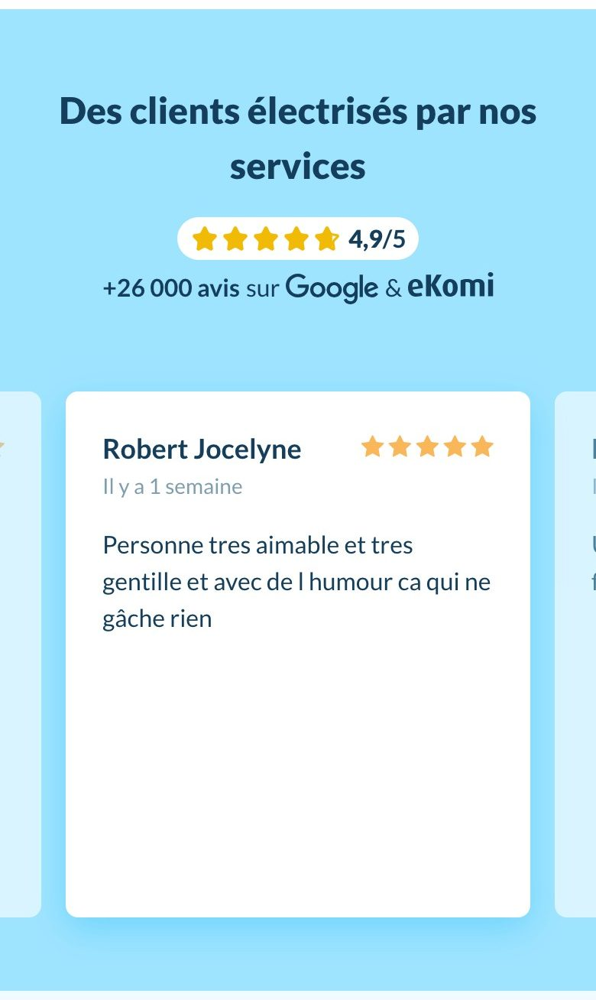
Hello Watt (FR)Niebieska sekcja: ocena 4,9/5, „+26 000 avis sur Google & eKomi” i karuzela opinii z imieniem, datą względną i gwiazdkami.
Quatt (NL)Ocena 4,3 z 5, pięć gwiazdek i „4.208 reviews” nad hasłem hero.
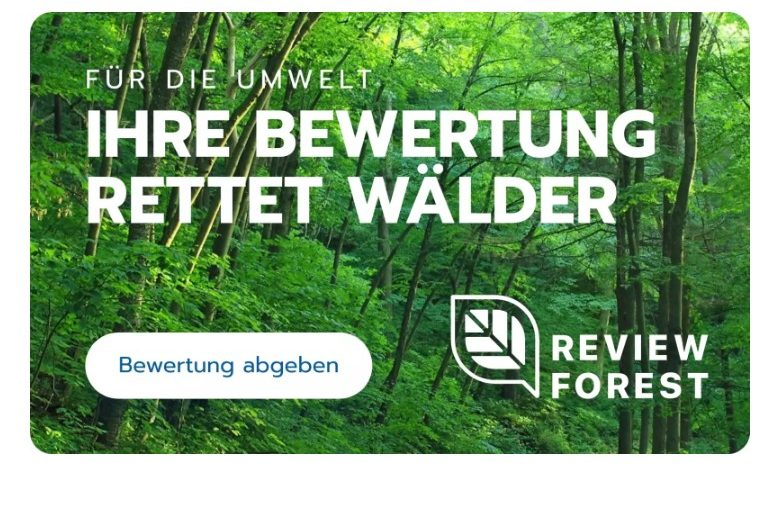
Flairmax (DE)Baner „Für die Umwelt: Ihre Bewertung rettet Wälder” z przyciskiem „Bewertung abgeben” i znakiem Review Forest.
BridomGranatowy blok „Opinie naszych klientów”: data, imię i miasto, treść; kropki karuzeli.
Dziś
Dziś tego nie ma
Element nowy — nie istnieje na obecnej stronie
Projekt
Opinie klientów
1Pierwsze montaże: [data]
Opinie pojawią się tu po pierwszych montażach. Nie pokazujemy opinii, których nie ma, ani ocen bez liczby.
2Jak zbieramy opinie
14 dni po montażu
Wysyłamy e-mail i SMS z linkiem do krótkiego formularza.
Opinia z numerem zamówienia
Pokazujemy znacznik „zweryfikowany zakup”, imię, miasto i model.
Publikujemy wszystkie
Także krytyczne. Odpowiadamy pod opinią. Opinie także w Google [operator].
Zmiany
＋ NoweStan pusty: „Pierwsze montaże: [data]”; bez ocen i bez liczb.
＋ NoweMechanizm: e-mail i SMS 14 dni po montażu, opinia z numerem zamówienia, publikacja wszystkich opinii.
Znaczniki na projekcie
1HP-11.1＋ NoweStan pusty z datą pierwszych montaży
2HP-11.2＋ NoweMechanizm zbierania opinii
DlaczegoStan pusty z datą pierwszych montaży i trzy kroki zbierania opinii; ani jednej ocenianej opinii.kliknij, aby rozwinąć
KupującyWysoki bilet i brak historii sklepu to największa luka zaufania: kupujący pompę pyta o opinie negatywne (260 fraz miesięcznie) i o awarie po latach.Czytaj więcejDlatego mechanizm zbierania musi być widoczny od dnia startu, a opinii nie wolno udawać.
RynekQuatt ma ocenę 4,3 z 4 208 opinii nad hasłem hero, na karcie i na Trustpilot; Hello Watt 4,9/5 z ponad 26 000 opinii z Google i eKomi oraz karuzelę z imieniem i datą; Flairmax zbiera opinie akcją „Bewertung abgeben” (posadzone drzewo) i ma oceny Google 4,9 (130) i Trusted Shops 4,78 (113); Bridom pokazuje „4,5 — bardzo dobry” z znakiem Zaufane Opinie Ceneo.Czytaj więcejW PL blok opinii mają 2 z 8 sklepów.
UXSekcja jest widoczna, ale pusta: puste miejsce z datą jest uczciwsze niż brak i niż opinie wymyślone.Czytaj więcejZ F2 bierzemy układ „Opinie”, ale usuwamy z niego wszystkie przykładowe opinie i gwiazdki (F2 pokazywało je jako przykłady) — nie wolno pokazywać nieistniejących opinii nawet jako makiety.
Testy A/B — 5 propozycji · 1 z grafiką kliknij, aby rozwinąćTest 1 · A/BStan pusty kontra brak blokuz grafiką
Hipoteza: Jeśli blok opinii z pustym stanem zniknie do pierwszych opinii, to wskaźnik odbić się nie zmieni, a strona będzie krótsza.
Wariant ABlok z pustym stanem i mechanizmem.
Wariant BBez bloku do pierwszych opinii.
Dowód: Quatt i Hello Watt pokazują opinie dopiero z liczbą.
Metryka główna: Odbicia ze strony głównej
Pomocnicze:
Przejście na listę
Warunek: Po starcie sprzedaży, min. 200 sesji na wariant; do tego czasu przegląd nagrań sesji (Clarity) i porównanie przed/po.
Próba: min. 200 sesji na wariant
Zastępczo: przed/po 14 dni + 20 nagrań sesji z elementem w widoku
Odwracalny
Wariant B — jak wygląda
Montaże
Wykonane montaże: [N]
Liczba rośnie po każdym montażu; pod nią lista miast ([miasta]). Opinie dołączymy, gdy będzie ich co najmniej [N].
Test 2 · A/BLicznik montaży zamiast opinii
Hipoteza: Jeśli zamiast opinii pokażemy liczbę wykonanych montaży, to więcej osób zaufa, bo liczba jest dowodem skali.
Wariant AStan pusty.
Wariant B„Wykonane montaże: [N]” i miasta.
Dowód: Quatt: 20 000+ klientów.
Metryka główna: Przejście na listę
Warunek: Po pierwszych montażach i z prawdziwą liczbą.
Próba: min. 200 sesji na wariant
Zastępczo: przed/po 14 dni + 20 nagrań sesji z elementem w widoku
Odwracalny
Test 3 · A/BProśba o opinię: 14 kontra 30 dni po montażu
Hipoteza: Jeśli prośba przyjdzie 30 dni po montażu, to więcej osób odpowie, bo zdąży użyć instalacji.
Wariant A14 dni.
Wariant B30 dni.
Metryka główna: Odsetek wystawionych opinii
Warunek: Po pierwszych montażach.
Próba: min. 200 sesji na wariant
Zastępczo: przed/po 14 dni + 20 nagrań sesji z elementem w widoku
Odwracalny
Test 4 · A/BZachęta: posadzenie drzewa kontra brak
Hipoteza: Jeśli za opinię posadzimy drzewo (jak Flairmax), to więcej osób wystawi opinię.
Wariant ABez zachęty.
Wariant BDrzewo za opinię.
Dowód: Flairmax: Review Forest.
Metryka główna: Odsetek wystawionych opinii
Warunek: Po pierwszych montażach.
Próba: min. 200 sesji na wariant
Zastępczo: przed/po 14 dni + 20 nagrań sesji z elementem w widoku
Odwracalny
Test 5 · A/BOpinie własne kontra Google
Hipoteza: Jeśli opinie będą zbierane w Google, to więcej osób zaufa, bo ocena jest zewnętrzna.
Wariant AOpinie własne z numerem zamówienia.
Wariant BOpinie w Google.
Dowód: Quatt i Hello Watt używają Trustpilot, Google, eKomi.
Metryka główna: Przejście na listę
Warunek: Po zebraniu min. 30 opinii.
Próba: min. 200 sesji na wariant
Zastępczo: przed/po 14 dni + 20 nagrań sesji z elementem w widoku
Odwracalny
Decyzja Operator opinii (własny formularz czy Google) i data pierwszych montaży; opinie publikuje się tylko z numerem zamówienia.
HP-12
Kontakt do eksperta
DODAJEMY
Blok „Porozmawiaj z doradcą”: imię, rola i godziny doradcy oraz cztery kanały (telefon, wideorozmowa 15 min, czat, formularz); pod spodem informacja o kierowniku montażu z uprawnieniami. Imię, zdjęcie i uprawnienia to pola do uzupełnienia. Ten sam element ma wersje „Nie wiesz, którą klasę?” na liście i „Pytanie o ten model” na karcie.
Najlepsze na rynku
Hello Watt: przyklejony przycisk „Appeler Hello Watt” z ikoną słuchawki, widoczny przy przewijaniu.
Columbus: pomarańczowy baner „Bezpłatna konsultacja” z jednym przyciskiem.
KupPanPompe: dane kontaktowe w stopce: dwa telefony, e-mail, godziny 7:00–17:00, NIP i adres.
＋ NoweKierownik montażu z uprawnieniami (SEP, F-gaz): drugi głos doradcy.
Znaczniki na projekcie
1HP-12.1＋ NoweOsoba z imieniem i godzinami
2HP-12.2＋ NoweKanały kontaktu
3HP-12.3＋ NoweOdpowiedzialność za montaż nazwana
DlaczegoDoradca z imieniem, godzinami i czterema kanałami kontaktu; dane w polach do uzupełnienia.kliknij, aby rozwinąć
KupującyPrzy pompie największą obawą jest instalator („kto mi to zamontuje, czy gwarancja nie przepadnie”); przy banku — kto odpowiada za dopasowanie do falownika i dotację.Czytaj więcejRozmowa z człowiekiem rozstrzyga to szybciej niż tekst, a nazwanie osoby i uprawnień zmniejsza ryzyko.
RynekDane kontaktowe w stopce ma 5 z 8 sklepów PL (norma PL; po dodaniu UE spadają do 5 z 11, poniżej normy).Czytaj więcejBaner doradcy mają Columbus („Bezpłatna konsultacja”) i KupPanPompe (2 z 8 PL); Hello Watt przykleja przycisk „Appeler Hello Watt” do dołu ekranu na każdej wysokości; Quatt umieszcza doradcę w nagłówku; Sofar kafel „Wsparcie techniczne”; Bridom czat na stronie głównej (1 z 8).
UXDziś kontaktu z człowiekiem nie ma: ani telefonu, ani czatu, ani formularza.Czytaj więcejZ F2 bierzemy blok eksperta, bo analiza go uzasadnia; imię, zdjęcie i uprawnienia pozostają polami do uzupełnienia, bo model treści ma „imie: null”.
Testy A/B — 5 propozycji · 1 z grafiką kliknij, aby rozwinąćTest 1 · A/BBlok w treści kontra przyklejony przyciskz grafiką
Hipoteza: Jeśli przycisk „Zadzwoń” będzie przyklejony do dołu ekranu, to więcej osób zadzwoni, bo jest dostępny na każdej wysokości strony.
Wariant ABlok „Porozmawiaj z doradcą” w treści.
Wariant BPrzyklejony przycisk „Zadzwoń do doradcy”.
Dowód: Hello Watt: przyklejony przycisk.
Metryka główna: Klik w telefon
Pomocnicze:
Wypełnienie formularza
Czas do pierwszego kontaktu
Warunek: Po starcie sprzedaży, min. 200 sesji na wariant; do tego czasu przegląd nagrań sesji (Clarity) i porównanie przed/po.
Próba: min. 200 sesji na wariant
Zastępczo: przed/po 14 dni + 20 nagrań sesji z elementem w widoku
Hipoteza: Jeśli pokażemy prawdziwe zdjęcie doradcy, to więcej osób zadzwoni, bo widzi człowieka.
Wariant AIkona osoby.
Wariant BZdjęcie.
Metryka główna: Klik w telefon
Warunek: Po dostarczeniu zdjęcia doradcy.
Próba: min. 200 sesji na wariant
Zastępczo: przed/po 14 dni + 20 nagrań sesji z elementem w widoku
Odwracalny
Test 3 · A/BWideorozmowa jako pierwszy kanał
Hipoteza: Jeśli pierwszym przyciskiem będzie wideorozmowa 15 minut, to więcej osób umówi rozmowę, bo odpada telefon.
Wariant ATelefon pierwszy.
Wariant BWideorozmowa pierwsza.
Metryka główna: Umówienie rozmowy
Warunek: Po starcie sprzedaży, min. 200 sesji na wariant; do tego czasu przegląd nagrań sesji (Clarity) i porównanie przed/po.
Próba: min. 200 sesji na wariant
Zastępczo: przed/po 14 dni + 20 nagrań sesji z elementem w widoku
Odwracalny
Test 4 · A/BGodziny dostępności: widoczne kontra ukryte
Hipoteza: Jeśli godziny będą ukryte, to blok będzie krótszy, ale mniej osób zadzwoni w godzinach pracy.
Wariant AGodziny widoczne.
Wariant BGodziny w szczegółach.
Metryka główna: Klik w telefon
Warunek: Po starcie sprzedaży, min. 200 sesji na wariant; do tego czasu przegląd nagrań sesji (Clarity) i porównanie przed/po.
Próba: min. 200 sesji na wariant
Zastępczo: przed/po 14 dni + 20 nagrań sesji z elementem w widoku
Odwracalny
Test 5 · A/BKierownik montażu nazwany kontra anonimowy
Hipoteza: Jeśli w bloku zostanie tylko doradca (bez kierownika montażu), to blok będzie prostszy, ale odpowiedzialność za montaż będzie mniej widoczna.
Wariant ADoradca i kierownik montażu.
Wariant BSam doradca.
Metryka główna: Przejście na listę
Warunek: Po starcie sprzedaży, min. 200 sesji na wariant; do tego czasu przegląd nagrań sesji (Clarity) i porównanie przed/po.
Próba: min. 200 sesji na wariant
Zastępczo: przed/po 14 dni + 20 nagrań sesji z elementem w widoku
Odwracalny
Decyzja Dane doradcy (imię, zdjęcie, telefon, godziny) i kierownika montażu (uprawnienia) przekazuje Tomek.
HP-13
Dotacje bez tłumacza
UZUPEŁNIENIE FUNKCJI
Sekcja zostaje co do słowa: trzy bloki z kwotami i warunkami. Dochodzi data aktualizacji i przycisk „Policz moją dotację” (narzędzie „wkrótce”), żeby kupujący z dotacji nie czytał kwot, tylko dostał swoją.
Najlepsze na rynku
KupPanPompe: akordeon „Aktualne programy dotacyjne” z progami kwot Czystego Powietrza (66 000, 99 000, 135 000 zł) i listą programów.
Hello Watt: karta „Aides déduites de votre devis” — dotacje odliczane od wyceny, załatwia je firma.
Quatt: kafel „Subsidie daalt in 2027” z przyciskiem wyceny i wierszem „Je hebt nog 65 dagen voor de hogere subsidie”.
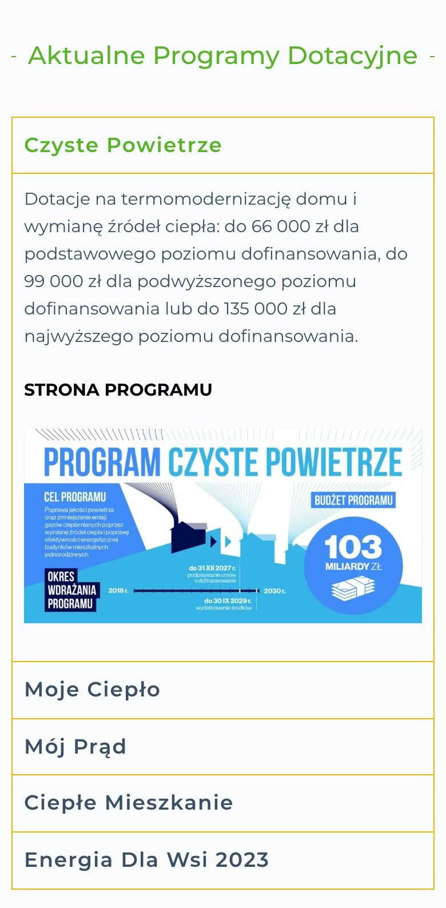
KupPanPompeAkordeon „Aktualne programy dotacyjne”: Czyste Powietrze z progami (66 000 / 99 000 / 135 000 zł), potem Moje Ciepło, Mój Prąd, Ciepłe Mieszkanie, Energia dla Wsi.
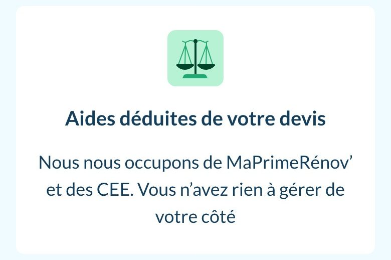
Hello Watt (FR)Karta „Aides déduites de votre devis”: dotacje (MaPrimeRénov' i CEE) odliczone od wyceny, firma załatwia formalności.
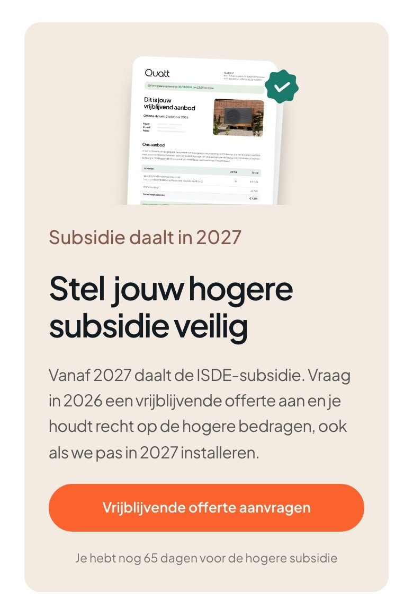
Quatt (NL)Kafel „Subsidie daalt in 2027” z przyciskiem wyceny i wierszem „Je hebt nog 65 dagen voor de hogere subsidie”.
Dziś
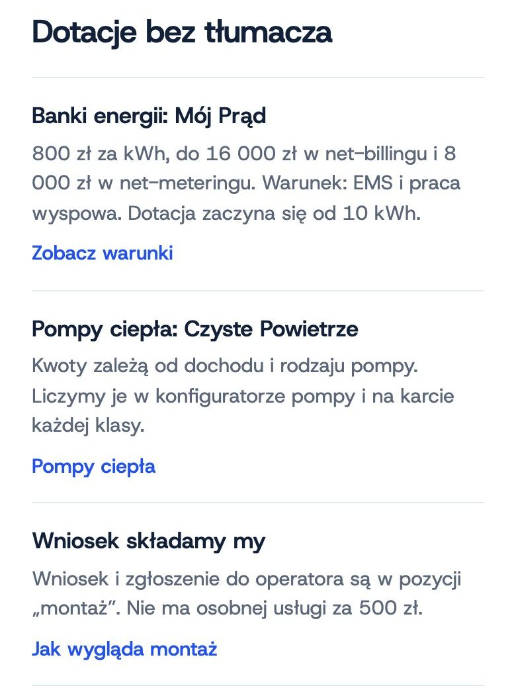
Dziś: „Dotacje bez tłumacza”, trzy bloki z kwotami i warunkami.
＋ NowePrzycisk „Policz moją dotację” prowadzący do narzędzia (status „wkrótce”).
Znaczniki na projekcie
1HP-13.1Aa TekstData aktualizacji dotacji
2HP-13.2＋ NoweWejście w kalkulator dotacji
DlaczegoTrzy bloki 1:1; dochodzi data aktualizacji i przycisk „Policz moją dotację”.kliknij, aby rozwinąć
KupującyDotacja to punkt wejścia nr 1 banku (9 320 fraz miesięcznie, 37 pytań: „ile dostanę i jakie warunki”) i jeden z dwóch dla pompy („bon energetyczny” 27 100, „czyste powietrze” 22 200).Czytaj więcejKupujący szuka swojej kwoty, a nie opisu programów.
RynekKupPanPompe: akordeon „Aktualne programy dotacyjne” z progami kwot (66 000 / 99 000 / 135 000 zł) na stronie głównej (1 z 8 PL); Hello Watt: tabela „typ pompy × próg dochodu” i karta „Aides déduites de votre devis”; Quatt: licznik dni do zmiany dotacji i przycisk wyceny.
UXObecne trzy bloki są prawidłowe i zawierają kwoty i warunki: zostają 1:1.Czytaj więcejBrakuje daty aktualizacji (programy zmieniają się co kilka miesięcy) i wejścia w narzędzie.
Testy A/B — 5 propozycji · 1 z grafiką kliknij, aby rozwinąćTest 1 · A/BTabela dotacji kontra trzy kartyz grafiką
Hipoteza: Jeśli dotacje będą w tabeli „program × ile”, to więcej osób znajdzie swoją kwotę, bo tabela porównuje programy.
Wariant ATrzy karty.
Wariant BTabela programów.
Dowód: Hello Watt: tabela typ × próg dochodu.
Metryka główna: Klik w kalkulator dotacji
Pomocnicze:
Czas na sekcji
Warunek: Po starcie sprzedaży, min. 200 sesji na wariant; do tego czasu przegląd nagrań sesji (Clarity) i porównanie przed/po.
Próba: min. 200 sesji na wariant
Zastępczo: przed/po 14 dni + 20 nagrań sesji z elementem w widoku
Odwracalny
Wariant B — jak wygląda
Dotacje bez tłumacza
ProgramIle
Mój Prąd (bank)800 zł/kWh, do 16 000 zł
Czyste Powietrze (pompa)zależnie od dochodu
Wniosekskładamy my, bez opłaty
Test 2 · A/BData aktualizacji: widoczna kontra w stopce
Hipoteza: Jeśli data będzie tylko w stopce, to sekcja będzie krótsza, a zaufanie do aktualności się zmieni.
Wariant APod nagłówkiem.
Wariant BW stopce.
Metryka główna: Klik w kalkulator dotacji
Warunek: Po starcie sprzedaży, min. 200 sesji na wariant; do tego czasu przegląd nagrań sesji (Clarity) i porównanie przed/po.
Próba: min. 200 sesji na wariant
Zastępczo: przed/po 14 dni + 20 nagrań sesji z elementem w widoku
Odwracalny
Test 3 · A/BLicznik terminu zamiast daty
Hipoteza: Jeśli pokażemy „zostało [N] dni do końca naboru”, to więcej osób zamówi, bo termin jest realny (po sprawdzeniu terminu programu).
Wariant AData aktualizacji.
Wariant BLicznik dni do końca naboru.
Dowód: Quatt: licznik dni do zmiany dotacji.
Metryka główna: Rozpoczęcie kalkulatora
Warunek: Tylko dla programów z terminem końca naboru.
Próba: min. 200 sesji na wariant
Zastępczo: przed/po 14 dni + 20 nagrań sesji z elementem w widoku
Odwracalny
Test 4 · A/BPrzycisk kalkulatora: nad kartami kontra pod
Hipoteza: Jeśli przycisk będzie nad kartami, to więcej osób go kliknie.
Wariant APod kartami.
Wariant BNad kartami.
Metryka główna: Klik w kalkulator dotacji
Warunek: Po starcie sprzedaży, min. 200 sesji na wariant; do tego czasu przegląd nagrań sesji (Clarity) i porównanie przed/po.
Próba: min. 200 sesji na wariant
Zastępczo: przed/po 14 dni + 20 nagrań sesji z elementem w widoku
Odwracalny
Test 5 · A/BKwota po dotacji w kafelkach zamiast sekcji
Hipoteza: Jeśli kwota po dotacji jest już w kaflach produktów i hero, to osobna sekcja może być krótsza (jedna karta).
Wariant ATrzy karty.
Wariant BJedna karta z kwotą i przyciskiem.
Metryka główna: Klik w kalkulator dotacji
Warunek: Po starcie sprzedaży, min. 200 sesji na wariant; do tego czasu przegląd nagrań sesji (Clarity) i porównanie przed/po.
Próba: min. 200 sesji na wariant
Zastępczo: przed/po 14 dni + 20 nagrań sesji z elementem w widoku
Odwracalny
HP-14
Stopka: dane firmy, kontakt, media społecznościowe
ZAMIANACZEKA NA DANE
Stopka zostaje, a w kolumnie z opisem sklepu dochodzą telefon, e-mail, godziny, adres i dane firmy oraz linki do mediów społecznościowych. Wszystko to pola do uzupełnienia — dziś stopka mówi „dane firmy, NIP i uprawnienia: do uzupełnienia”. Linki prawne po polsku.
Najlepsze na rynku
KupPanPompe: blok „Właściciel sklepu”: firma, adres, NIP, dwa telefony, e-mail, godziny 7:00–17:00.
Quatt: stopka z adresem, numerem KVK i BTW, aplikacjami i kolumnami linków.
Bridom: blok „Kontakt” z e-mailem i godzinami pracy, osobny wiersz mediów społecznościowych i form płatności.
KupPanPompeBlok „Właściciel sklepu”: firma, adres, NIP, dwa numery telefonu, e-mail i godziny pracy 7:00–17:00.
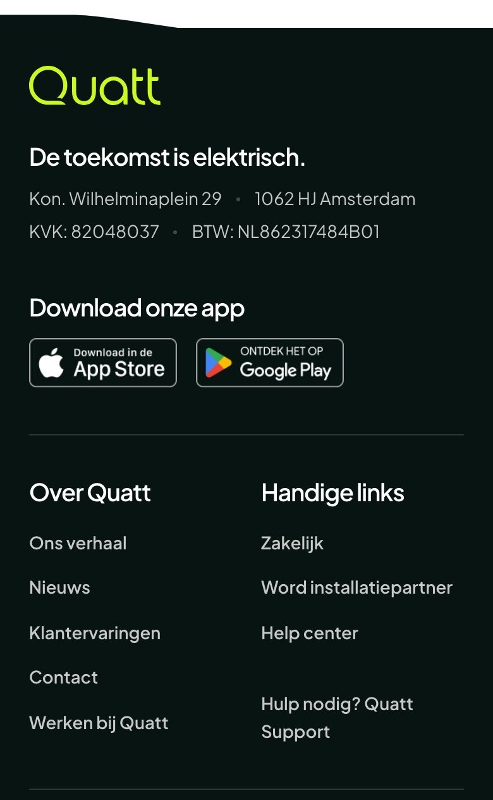
Quatt (NL)Stopka z adresem, numerem KVK i BTW, aplikacjami i dwiema kolumnami linków (Over Quatt, Handige links).
BridomBlok „Kontakt”: e-mail i godziny pracy.
Dziś
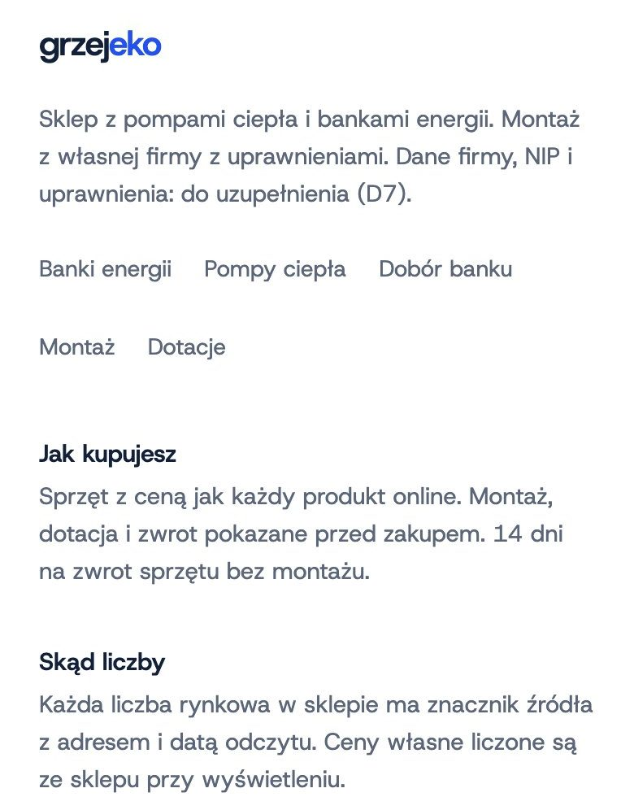
Dziś: logo, opis sklepu, pięć linków i dwa bloki tekstu; dane firmy „do uzupełnienia”.
Projekt
Zmiany
＋ NoweTelefon, e-mail, godziny, adres i dane firmy (NIP, KRS).
＋ NoweLinki do mediów społecznościowych (po założeniu profili).
Aa TekstLinki prawne po polsku: Regulamin, Polityka prywatności, Dane firmy, Dostawa, gwarancja i zwroty (dziś po angielsku).
Znaczniki na projekcie
1HP-14.1＋ NoweKontakt i dane firmy
2HP-14.2＋ NoweMedia społecznościowe
3HP-14.3Aa TekstLinki prawne po polsku
DlaczegoDopisujemy kontakt, dane firmy i media; linki prawne po polsku.kliknij, aby rozwinąć
KupującyZakup za kilkadziesiąt tysięcy złotych wymaga sprawdzenia, kim jest sprzedawca: NIP, adres, godziny i telefon.Czytaj więcejPompa ma bloker „czy firma jest autoryzowana”; dane firmy w stopce to najtańszy dowód.
RynekDane kontaktowe w stopce ma 5 z 8 sklepów PL (norma PL) i 5 z 11 razem; media społecznościowe 4 z 8 PL; blok „o firmie” 3 z 8.Czytaj więcejKupPanPompe podaje w stopce firmę, adres, NIP, dwa telefony, e-mail i godziny; Quatt adres, KVK i BTW; Flairmax nazwę spółki, formy płatności i infolinię.
UXStopka jest dziś czysta i zgodna ze stylem, ale pusta z danymi; zmiana jest dopisaniem pól, nie przebudową.Czytaj więcejLinki prawne po angielsku („Terms of Sale”, „Privacy Policy”) to tekst środowiska testowego.
Testy A/B — 5 propozycji · 1 z grafiką kliknij, aby rozwinąćTest 1 · A/BTelefon w stopce kontra przycisk „Zadzwoń”z grafiką
Hipoteza: Jeśli stopka dostanie przycisk „Infolinia” zamiast tekstu z numerem, to więcej osób zadzwoni, bo przycisk jest łatwiejszy do kliknięcia.
Wariant ANumer tekstem.
Wariant BPrzycisk „Infolinia [numer]”.
Dowód: KupPanPompe: numery telefonów tekstem.
Metryka główna: Klik w telefon
Pomocnicze:
Przewinięcie do stopki
Warunek: Po starcie sprzedaży, min. 200 sesji na wariant; do tego czasu przegląd nagrań sesji (Clarity) i porównanie przed/po.
Próba: min. 200 sesji na wariant
Zastępczo: przed/po 14 dni + 20 nagrań sesji z elementem w widoku
Odwracalny
Wariant B — jak wygląda
Test 2 · A/BDane firmy: stopka kontra osobna podstrona
Hipoteza: Jeśli dane firmy będą tylko na podstronie „Dane firmy”, to stopka będzie krótsza, a zaufanie spadnie.
Wariant AW stopce.
Wariant BNa podstronie.
Metryka główna: Wejście na podstronę „Dane firmy”
Warunek: Po starcie sprzedaży, min. 200 sesji na wariant; do tego czasu przegląd nagrań sesji (Clarity) i porównanie przed/po.
Próba: min. 200 sesji na wariant
Zastępczo: przed/po 14 dni + 20 nagrań sesji z elementem w widoku
Odwracalny
Test 3 · A/BMedia społecznościowe: ikony kontra nazwy
Hipoteza: Jeśli zamiast nazw sieci pokażemy ikony, to stopka będzie bardziej rozpoznawalna.
Wariant ANazwy.
Wariant BIkony.
Metryka główna: Klik w link
Warunek: Po starcie sprzedaży, min. 200 sesji na wariant; do tego czasu przegląd nagrań sesji (Clarity) i porównanie przed/po.
Próba: min. 200 sesji na wariant
Zastępczo: przed/po 14 dni + 20 nagrań sesji z elementem w widoku
Odwracalny
Test 4 · A/BOceny zewnętrzne w stopce (po zebraniu)
Hipoteza: Jeśli w stopce pojawi się ocena zewnętrzna (jak u Flairmax: Google i Trusted Shops), to więcej osób zaufa.
Wariant ABez ocen.
Wariant BOcena i liczba opinii.
Dowód: Flairmax: oceny 4,9 i 4,78 w stopce.
Metryka główna: Przejście na listę
Warunek: Po zebraniu opinii.
Próba: min. 200 sesji na wariant
Zastępczo: przed/po 14 dni + 20 nagrań sesji z elementem w widoku
Odwracalny
Test 5 · A/BGodziny: w stopce kontra w nagłówku
Hipoteza: Jeśli godziny pracy będą przy ikonie telefonu w nagłówku, to więcej osób zadzwoni w godzinach pracy.
Wariant AW stopce.
Wariant BPrzy ikonie telefonu.
Metryka główna: Klik w telefon
Warunek: Po starcie sprzedaży, min. 200 sesji na wariant; do tego czasu przegląd nagrań sesji (Clarity) i porównanie przed/po.
Próba: min. 200 sesji na wariant
Zastępczo: przed/po 14 dni + 20 nagrań sesji z elementem w widoku
Odwracalny
Decyzja Dane firmy, telefon, godziny, adres i profile społecznościowe przekazuje Tomek (decyzja o firmie montażowej).
Reguła 1–1,5 kWh na kWp, i dlaczego program dotacji liczy inaczej. wkrótce
Porównanie· 6 minJaka pompa ciepła do domu 150 m²
Moc z zapotrzebowania, nie z metrażu. Monoblok czy split. wkrótce
3Linkiem jest tylko opublikowany artykuł; szkice mają status „wkrótce”.
1Najczęściej zamawiane i czytane
Ranking pojawi się po pierwszych zamówieniach
Produkty: kolejność z zamówień ze sklepu w oknie 30 dni. Artykuły: odsłony z analityki w oknie 30 dni. Pokazujemy dopiero, gdy jest z czego liczyć ([próg: N zamówień / N odsłon]). Do tego czasu kafle są ułożone według ceny.
Reguła 1–1,5 kWh na kWp, i dlaczego program dotacji liczy inaczej. wkrótce
Porównanie· 6 minJaka pompa ciepła do domu 150 m²
Moc z zapotrzebowania, nie z metrażu. Monoblok czy split. wkrótce
3Linkiem jest tylko opublikowany artykuł; szkice mają status „wkrótce”.
1Najczęściej zamawiane i czytane
Ranking pojawi się po pierwszych zamówieniach
Produkty: kolejność z zamówień ze sklepu w oknie 30 dni. Artykuły: odsłony z analityki w oknie 30 dni. Pokazujemy dopiero, gdy jest z czego liczyć ([próg: N zamówień / N odsłon]). Do tego czasu kafle są ułożone według ceny.